第20章 将细胞整合到组织
译自 Molecular Cell Biology, 第8版 · Lodish et al. · Integrating Cells into Tissues · 保留全部图表（点击图片可放大）
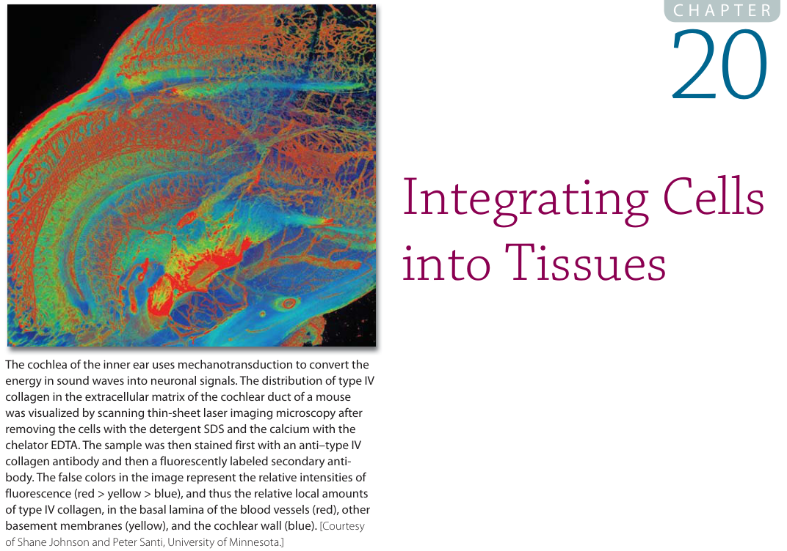
在植物和动物等复杂多细胞生物的发育过程中，祖细胞分化成各具特征性组成、结构和功能的独特"类型"。特定类型的细胞常常聚集成为一种组织，以协同完成某一共同功能：肌肉收缩；神经组织传导电脉冲；植物的木质部组织运输水分。不同组织可被组织成一个器官，同样是为了完成一种或多种特定功能。例如，心脏的肌肉、瓣膜和血管协同工作以泵送血液。许多类型细胞和组织的协调运作使生物体能够运动、代谢、繁殖并执行其他必需活动。事实上，植物和动物复杂多样的形态正是"整体大于各个组成部分之和"的例证，用更专业的说法，即复杂系统的涌现特性。
脊椎动物有数百种不同的细胞类型，包括白细胞（白血细胞）和红细胞（红血细胞）、视网膜中的感光细胞、储存脂肪的脂肪细胞、结缔组织中的成纤维细胞，以及人脑中数百种不同的神经元亚型。即使简单的动物也表现出复杂的组织构造。线虫秀丽隐杆线虫的成体仅有959个细胞，但这些细胞却分属12种不同的一般细胞类型和许多不同的亚型。然而，尽管形态和功能各异，所有动物细胞都可归类为仅五类主要组织的组分：上皮组织、结缔组织、肌肉组织、神经组织和血液。各种细胞类型以极其复杂的精确模式排列，从而形成组织和器官。这种复杂性的代价包括在个体生物发育过程中对信息、物质、能量和时间的需求增加。尽管复杂组织和器官的生理代价很高，但它们赋予了在多样且多变环境中繁盛生存的能力——这是一项重大的进化优势。
像我们这样具有复杂组织和器官的动物（后生动物）的一个决定性特征是，其大多数组织和器官的外表面和内表面——事实上，整个生物体的外表面——都是由称为上皮的紧密堆积的片层状细胞层构成的。上皮的形成及其随后重塑为更复杂的上皮和非上皮组织的集合体，是后生动物发育的一个标志。紧密相连的上皮细胞片层充当可调节的选择透过性屏障，使生物体内得以形成化学和功能上不同的区室，例如胃和血流。因此，不同甚至相反的功能（如消化与合成）可以在一个生物体内同时高效进行。这种区室化还使多种生物功能能够得到更精细的调控。在许多方面，复杂组织和器官在生物体中的作用类似于细胞器与膜在单个细胞中的作用。
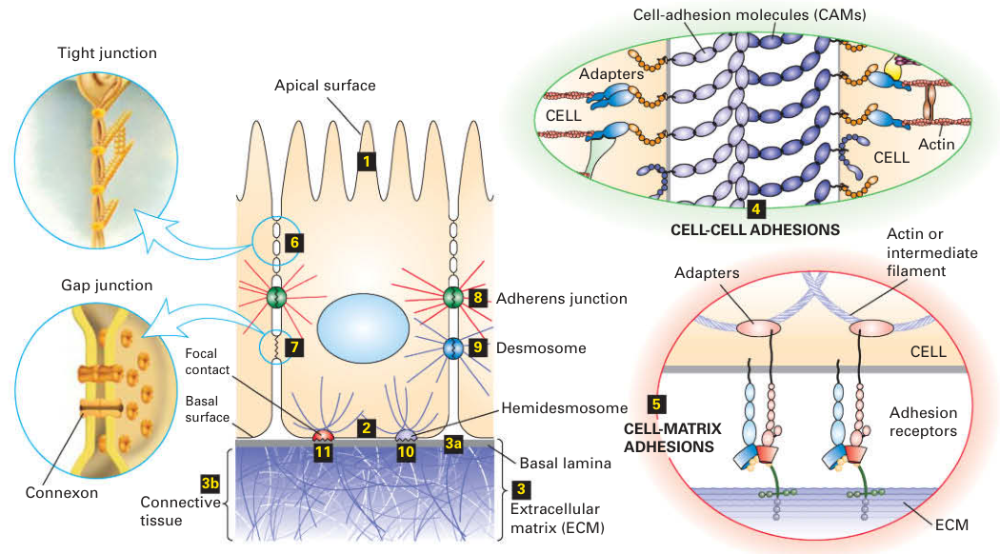
| Actin | 肌动蛋白 |
| Intermediate filament | 中间丝 |
| Adhesion receptors | 黏附受体 |
| Connexon | 连接子 |
| Tight junction | 紧密连接 |
| Desmosome | 桥粒 |
| Hemidesmosome | 半桥粒 |
| Gap junction | 缝隙连接 |
| Basal lamina | 基板 |
| Apical surface | 顶端表面 |
| Basal surface | 基底表面 |
| Focal contact | 黏着接触 |
| Connective tissue | 结缔组织 |
| Extracellular matrix (ECM) | 细胞外基质（ECM） |
| Adherens junction | 黏着连接 |
| Cell-adhesion molecules (CAMs) | 细胞黏附分子（CAM） |
| Adapters | 衔接蛋白 |
| Cell-matrix adhesions | 细胞-基质黏附 |
| Cell-cell adhesions | 细胞-细胞黏附 |
不同组织的装配及其组织成器官的过程，是由细胞水平的分子相互作用决定的（图20-1）。这些相互作用若不是有在时间、空间和功能上受到调控的、种类繁多的黏附分子的表达，就不可能实现。组织中的细胞能够通过称为细胞黏附分子（CAM）的专门膜蛋白直接彼此黏附（细胞-细胞黏附），这些蛋白常常聚集成专门的细胞连接。在黑腹果蝇中，估计至少有500个基因（约占总数的4%）参与细胞黏附，而在哺乳动物中此类基因超过1000个。动物组织中的细胞还通过质膜上的黏附受体与周围细胞外基质（ECM）的组分结合而间接黏附（细胞-基质黏附）；细胞外基质是细胞分泌到细胞间隙中的蛋白质和多糖构成的复杂交织网状结构。有些黏附受体也可充当CAM，介导细胞之间的直接相互作用。
细胞-细胞黏附和细胞-基质黏附不仅使细胞能够聚集形成不同的组织，还为细胞外部与内部之间的双向信息传递提供了途径。正如我们将看到的，这两类黏附都与细胞骨架和细胞信号通路有着内在的联系。因此，细胞所处的环境会影响其形状和功能特性（"由外向内"效应）；同样，细胞的形状和功能也会影响其所处环境（"由内向外"效应）。可见，连通性与通讯是组织中细胞密切相关的两种特性。信息传递对许多生物学过程都很重要，包括细胞存活、增殖、分化和迁移。因此，干扰黏附相互作用及相关信息流的缺陷能够导致或促成疾病——包括多种神经肌肉和骨骼疾病以及癌症——也就不足为奇了。
在本章中，我们考察细胞表面以及周围细胞外基质中各种类型的黏附分子。这些分子之间的相互作用使细胞得以组织成组织，并对组织的发育、功能和病理产生深远影响。许多黏附分子属于相关蛋白质的家族或超家族。虽然每种黏附分子都执行不同的作用，但我们将聚焦于其中某些家族成员所共有的特征，以阐明其结构与功能背后的一般原理。由于形成紧密上皮的组织中的黏附分子已被研究得特别透彻，而且它们在进化上出现得很早，我们将首先聚焦于上皮组织，例如肠道壁和皮肤。上皮细胞通常是不运动的（固着的）；然而，在发育、伤口愈合以及某些病理状态（如癌症）下，上皮细胞可以转变为运动细胞。黏附分子表达和功能的改变在这一转变中起关键作用，正如它们在涉及细胞运动的正常生物学过程（如白细胞爬行进入感染部位）中所起的作用一样。因此，在讨论上皮组织之后，我们将接着讨论非上皮的、发育中的以及运动的组织中的黏附。
植物和动物的进化谱系在多细胞生物出现之前就已分道扬镳。因此，多细胞性以及装配组织和器官的分子手段必然是在动物和植物谱系中独立演化出来的。所以，动物和植物在组织的构造和发育上表现出许多差异，也就不足为奇了。出于这一原因，我们首先考察动物组织的构造，然后再单独讨论植物。
20.1 细胞-细胞与细胞-细胞外基质黏附：概述
体内有许多不同类型的细胞，它们以无数种方式彼此动态相互作用。这些通过黏附分子实现的相互作用，必须在时间和空间上受到精确而仔细的调控，才能正确地决定复杂生物体中组织的结构和功能。因此，细胞-细胞黏附分子和细胞-ECM黏附分子表现出多样的结构，或者说它们的表达水平在不同细胞和组织中各不相同，也就不足为奇了。正因为如此，它们介导着非常特异而独特的细胞-细胞和细胞-ECM相互作用，这些相互作用既把组织维系在一起，也允许细胞与其环境之间进行必需的通讯。我们在本概述中首先简要介绍细胞上和细胞外基质中存在的各种类型的黏附分子、它们在生物体中的主要功能以及它们的进化起源。在随后各节中，我们将详细考察细胞-细胞和细胞-基质相互作用中各种参与者的独特结构与性质。
细胞黏附分子彼此结合并与胞内蛋白结合
细胞-细胞黏附是通过称为细胞黏附分子（CAM）的膜蛋白介导的。许多CAM属于四大主要家族之一：钙黏蛋白、免疫球蛋白（Ig）超家族、整合素和选择素。如图20-2中的示意结构所示，CAM常常是多个不同结构域的镶嵌体，其中许多结构域可以在不止一种蛋白质中找到。这些结构域的功能各不相同。有些赋予其与相邻细胞上的搭档CAM、甚至与同一细胞上的CAM特异性结合的能力。有些结构域以多拷贝形式存在，参与决定CAM的长度，从而有助于确定由CAM连接在一起的细胞质膜之间的距离。另一些膜蛋白，其结构不属于图20-2中任何一类主要CAM，也是CAM，并在各种组织中参与细胞-细胞黏附。正如我们稍后将看到的，整合素既可作为CAM，也可如图20-2所示作为与ECM组分结合的黏附受体。有些Ig超家族CAM也能发挥这种双重作用。
CAM通过其胞外结构域介导同类型细胞之间（同型黏附）或不同类型细胞之间（异型黏附）的黏附相互作用。一个细胞上的CAM可以直接与相邻细胞上同类CAM结合（同亲性结合），或与不同类别的CAM结合（异亲性结合）。CAM可以广泛分布于质膜与其他细胞接触的区域，也可以聚集成为称为细胞连接的离散斑块或斑点。细胞-细胞黏附可以是牢固而持久的，也可以相对微弱而短暂。例如，脊髓中神经元之间或肝脏中代谢细胞之间的结合表现出紧密的黏附。相反，血液中的免疫系统细胞往往只表现出短暂、微弱的相互作用，这使它们能够沿着血管壁滚动并穿过血管壁，前往组织内抗击感染。
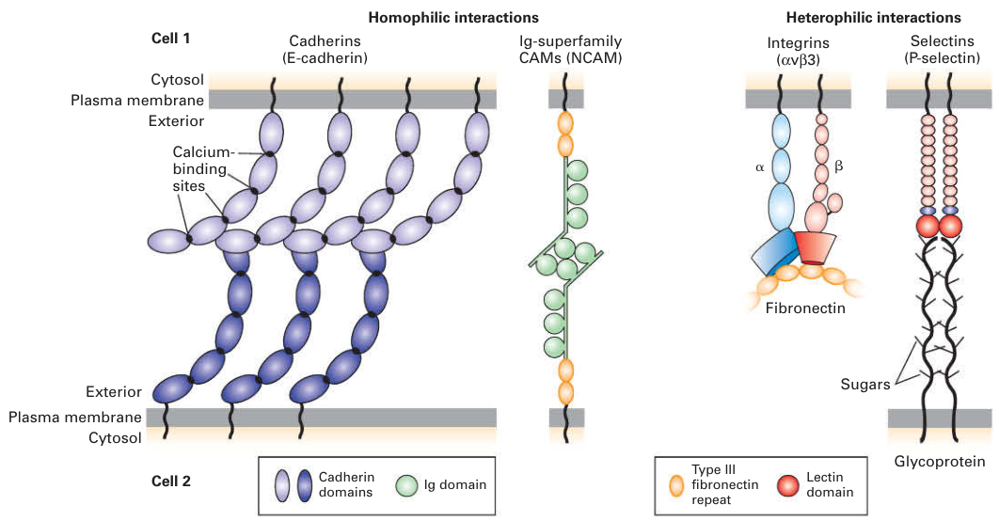
| Ig domain | Ig结构域 |
| Type III fibronectin repeat | III型纤连蛋白重复序列 |
| Lectin domain | 凝集素结构域 |
| Cadherins (E-cadherin) | 钙黏蛋白（E-钙黏蛋白） |
| Plasma membrane | 质膜 |
| Cytosol | 胞质 |
| Ig-superfamily CAMs (NCAM) | Ig超家族CAM（NCAM） |
| Homophilic interactions | 同亲性相互作用 |
| Heterophilic interactions | 异亲性相互作用 |
| Selectins (P-selectin) | 选择素（P-选择素） |
| Glycoprotein | 糖蛋白 |
| Sugars | 糖 |
| Integrins | 整合素 |
| Fibronectin | 纤连蛋白 |
| Cadherin domains | 钙黏蛋白结构域 |
| Calcium-binding sites | 钙结合位点 |
CAM的胞质结构域募集一组组多功能的衔接蛋白（见图20-1）。这些衔接蛋白充当连接子，直接或间接地把CAM连接到细胞骨架的组分上（见第17章和第18章）；它们还能募集在信号通路中发挥作用的胞内分子（见第15章和第16章），以改变细胞行为，包括基因表达和多种胞内蛋白的活性，其中也包括CAM本身。在许多情况下，CAM、衔接蛋白及其他相关蛋白的复杂聚集体在质膜的内表面组装起来。这些复合物促进细胞与其周围环境之间双向的、"由外向内"和"由内向外"的通讯。
许多细胞-细胞黏附的形成需要两类分子相互作用，即反式结合相互作用和顺式结合相互作用（图20-3）。反式相互作用也称为细胞间相互作用或黏附相互作用，顺式相互作用也称为细胞内相互作用或侧向相互作用。在反式相互作用中，一个细胞上的CAM与相邻细胞上的CAM结合。在顺式相互作用中，一个细胞上的单体CAM与同一细胞质膜上的一个或多个CAM结合。一个细胞内的侧向相互作用可以提高与相邻细胞上成簇CAM发生单体-单体或寡聚体-寡聚体反式相互作用的概率。此外，单体-单体反式相互作用的形成可以诱导顺式相互作用，进而增强反式黏附相互作用。看来反式和顺式相互作用是相互增强的。
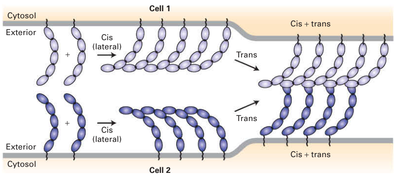
| Trans interactions | 反式相互作用 |
| Cis interactions | 顺式相互作用 |
| Cis (lateral) | 顺式（侧向） |
| Cytosol | 胞质 |
| Exterior | 胞外 |
细胞之间的黏附相互作用差异很大，取决于组织以及参与其中的特定CAM。就像尼龙搭扣一样，当许多微弱的相互作用叠加在一起时，CAM可以产生非常牢固的黏附，当CAM集中在细胞连接等小而明确的区域时尤其如此。有些CAM需要钙离子才能形成有效的黏附。此外，胞内分子与CAM胞质结构域的结合可以通过促进CAM聚集在一起并发生顺式缔合，或通过改变其构象以提高反式相互作用的亲和力，从而极大地影响CAM的分子间相互作用。决定两个细胞之间黏附性质的众多变量包括：相互作用分子的结合亲和力（热力学性质）、每种相互作用分子缔合与解离的总"开"和"关"速率（动力学性质）、黏附分子的空间分布或密度（系综性质）、CAM相对于黏附的活性与非活性状态（生化性质），以及外部力，如肌肉中的牵拉和牵张，或循环系统中细胞及周围流体的层流与湍流（力学性质）。
细胞外基质参与黏附、信号转导及其他功能
细胞外基质（ECM）是蛋白质和多糖的复杂组合，由细胞分泌并组装成一种网络，其中的各组分彼此结合。ECM常常参与把细胞和组织维系在一起。ECM的组成、物理性质和功能受到精细的控制，并且可以因组织类型、其所处位置、其生理状态以及其组分的化学修饰而异。这些修饰包括酶促磷酸化、硫酸化与去硫酸化、交联、蛋白酶和糖苷酶催化的切割以及氧化，此外还包括葡萄糖的非酶促添加（糖化）。
细胞通常是通过质膜上的黏附受体与ECM结合来感知ECM的，这些受体随后指示细胞对其环境作出适当反应，或根据细胞的状态调节ECM的结构和功能。不同的细胞可以通过各自的黏附受体与同一块ECM结合，从而间接地结合在一起。ECM组分包括蛋白聚糖——一种独特的糖蛋白（带有共价连接糖的蛋白质）；胶原蛋白及其他常形成纤维的蛋白质；可溶性的多黏附基质蛋白；以及其他组分（表20-1）。多黏附基质蛋白，如纤连蛋白和层粘连蛋白，是含有多个结构域的长而柔性的分子。它们负责结合各种类型的胶原蛋白、其他基质蛋白、多糖、胞外信号分子以及黏附受体。这些蛋白是细胞外基质的重要组织者。通过与黏附受体的相互作用，它们还调节细胞-基质黏附——从而调节细胞形状和行为。
细胞对ECM装配的贡献不仅在于分泌其组分，还在于直接参与把这些组分装配成含有大纤维和无定形大分子的复杂结构。一旦装配完成，ECM往往不是静态的，而是高度动态的，因为细胞向细胞外空间分泌蛋白酶等酶类和其他分子，会使其化学、物理和生物学性质发生定量或定性的改变。ECM中的这些改变通常被称为"重塑"，可以涉及共价化学修饰（包括ECM分子的化学交联）、部分或几乎完全的ECM组分蛋白酶解切割，以及新合成ECM分子的添加。
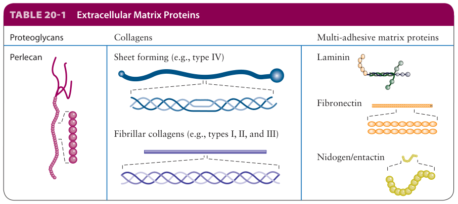
| Proteoglycans | 蛋白聚糖 |
| Perlecan | perlecan |
| Collagens | 胶原蛋白 |
| Sheet forming (e.g., type IV) | 片层形成型（如IV型） |
| Fibrillar collagens (e.g., types I, II, and III) | 纤维状胶原蛋白（如I、II和III型） |
| Multi-adhesive matrix proteins | 多黏附基质蛋白 |
| Laminin | 层粘连蛋白 |
| Fibronectin | 纤连蛋白 |
| Nidogen/entactin | nidogen/entactin |
细胞与其周围基质所占的相对体积在不同动物组织之间差异很大。例如，有些结缔组织主要是基质，细胞相对较少；而许多其他组织，如上皮，则由非常密集堆积的细胞构成，基质相对很少（图20-4）。ECM内部各分子的堆积密度也可以有很大差异。
H. V. Wilson对海洋海绵细胞黏附的经典研究确凿地表明，ECM的一项主要功能就是字面意义上地把组织维系在一起。重现Wilson经典工作的图20-5a和20-5b表明，当海绵被机械解离、单个来自两个海绵物种的细胞混合时，一个物种的细胞会彼此黏附，但不会黏附到另一物种的细胞上。这种特异性部分归因于ECM中的物种特异性黏附蛋白，它们通过黏附受体与细胞结合。这些黏附蛋白可以被纯化并用来包被彩色珠子；混合后，这些珠子会以与完整海绵细胞相似的特异性彼此聚集（图20-5c、d）。
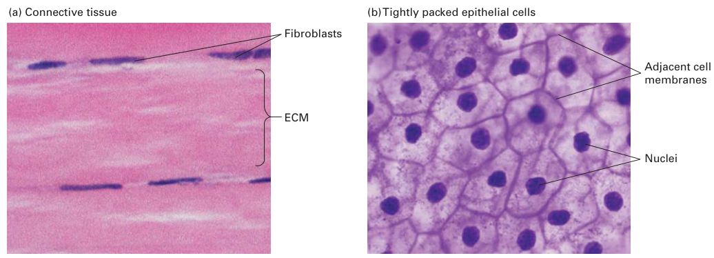
| Connective tissue | 结缔组织 |
| Tightly packed epithelial cells | 紧密堆积的上皮细胞 |
| Adjacent cell membranes | 相邻细胞膜 |
| Nuclei | 细胞核 |
| Fibroblasts | 成纤维细胞 |
| ECM | 细胞外基质（ECM） |
除促进细胞黏附外，ECM还发挥众多其他作用（表20-2）。在不同解剖部位，组分的不同组合使ECM适应特定用途：肌腱中的强度、牙齿和骨骼中的强度与刚性、软骨中的缓冲，以及眼球玻璃体中的透明度。ECM的组成还为细胞提供位置和信号信息，让细胞知道它在哪里以及它应该做什么。ECM重塑可以调节细胞与其环境的相互作用。此外，ECM充当许多控制细胞生长和分化的胞外信号分子的储库。另外，它还提供一种晶格，细胞可以穿过它或在它上面移动，或者被阻止移动，尤其是在组织装配的早期阶段。形态发生——胚胎发育中通过细胞运动和重排形成组织、器官和身体部位的阶段——关键性地依赖于细胞-基质黏附以及细胞-细胞黏附。例如，血管、肺中的气囊、乳腺和唾液腺以及其他结构的形成，都需要细胞-基质相互作用来驱动分支形态发生（分支结构的形成）（图20-6）。
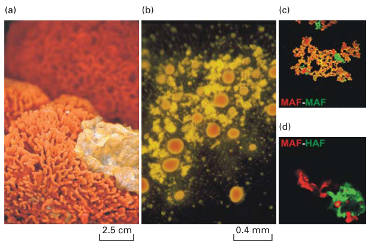
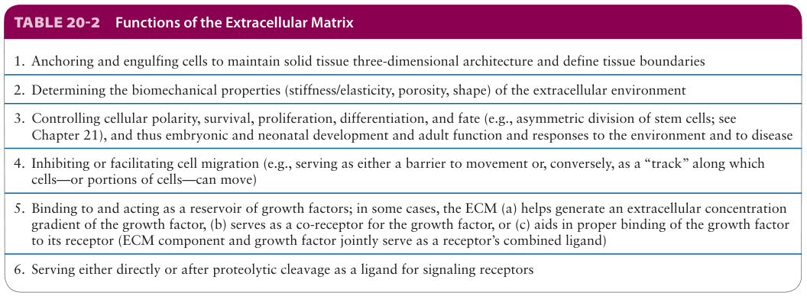
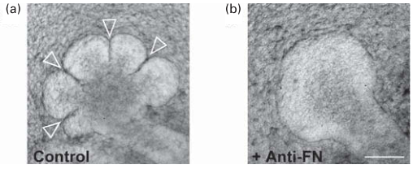
细胞-基质相互作用和细胞-细胞相互作用的破坏会对组织的发育造成毁灭性后果。图20-7展示了当两种关键ECM分子——II型胶原蛋白和perlecan——中任一者的基因被失活时，胚鼠骨骼系统发生的剧烈变化。黏附和ECM功能的破坏也是多种病理的特征，包括心血管、肌肉骨骼、肾脏、皮肤、眼和骨骼疾病，以及转移性癌症——在转移性癌症中，癌细胞离开其正常位置并扩散到全身。
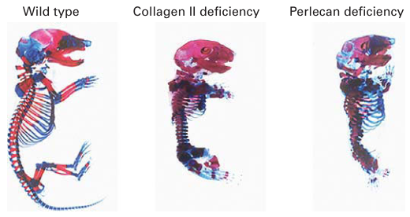
| Wild type | 野生型 |
| Collagen II deficiency | II型胶原蛋白缺陷 |
| Perlecan deficiency | perlecan缺陷 |
尽管许多CAM和黏附受体最初是因为其黏附特性而被鉴定和表征的，但它们在信号转导中也发挥重要作用，利用第15章和第16章讨论的许多通路。图20-8说明了一种黏附受体——整合素——如何通过衔接蛋白和信号分子，在物理上和功能上与广泛的胞内信号通路相互作用，从而影响细胞存活、基因转录、细胞骨架组织、细胞运动和细胞增殖。反过来，细胞内部信号通路活性的变化可以影响CAM和黏附受体的结构——例如，通过改变衔接蛋白与CAM胞质部分的结合——从而调节它们与其他细胞以及与ECM相互作用的能力。因此，由外向内和由内向外信号转导涉及众多相互关联的通路。
多面性黏附分子的进化使多样动物组织的进化成为可能
细胞-细胞黏附和细胞-基质黏附负责动物组织的形成、组成、结构和功能。毫不奇怪，有些黏附分子在进化上很古老，是多细胞生物中最保守的蛋白质之一。海绵——最原始的多细胞生物——表达某些CAM和多黏附ECM分子，其结构与相应的人类蛋白质惊人地相似。后生动物的进化依赖于具有新特性和新功能的多样黏附分子的进化，这些分子的表达水平在不同类型的细胞中各不相同。有些CAM和黏附受体（如钙黏蛋白、整合素以及L1CAM等Ig超家族CAM）和有些ECM组分（IV型胶原蛋白、层粘连蛋白、nidogen/entactin以及类perlecan蛋白聚糖）高度保守，因为它们在许多不同生物中起着关键作用，而其他黏附分子则保守性较低。例如，果蝇没有某些类型的胶原蛋白或ECM蛋白纤连蛋白，而它们在哺乳动物中发挥重要作用。黏附蛋白的一个共同特征是重复的、几乎相同的结构域（有时称为重复序列），它们构成非常大的蛋白质。这些分子的总长度，再加上它们通过不同功能结构域结合众多配体的能力，可能在其进化中发挥了作用。
黏附分子的多样性在很大程度上源于两种现象，它们能产生构成一个蛋白质家族的众多密切相关的蛋白质，即同工型。在某些情况下，一个蛋白质家族的不同成员由多个基因编码，这些基因通过基因复制和趋异进化从共同祖先产生（见第8章中的人类β类珠蛋白基因簇）。在另一些情况下，单个基因产生一个RNA转录本，该转录本可经过可变剪接产生多种mRNA，每种各编码一种不同的蛋白质同工型（见图8-3和10.2节）。这两种现象都促成了某些蛋白质家族（如钙黏蛋白）的多样性。某种黏附蛋白的特定同工型常常在某些细胞类型和组织中表达，而在其他细胞类型和组织中不表达。
细胞黏附分子介导机械转导
机械转导是机械力——或刺激——与生化过程之间的相互转换。这些相互转换是多种生物活动的基础，如信号转导、受调控的基因表达、细胞增殖、细胞迁移，以及细胞之间和细胞与ECM之间的相互作用。在细胞-细胞和细胞-ECM相互作用的背景下，机械转导通常涉及一种细胞表面CAM或黏附受体，它把机械力或生化信息跨质膜传递，以及一个或多个胞内或胞外机械感受器，它们通过改变形状和活性来响应机械刺激（另见第22章）。例如，施加在诸如ECM蛋白纤连蛋白或整合素衔接蛋白talin这类多结构域机械感受器蛋白全长上的张力，可以字面意义上地把一个或多个结构域拉开，从而暴露出在折叠结构域中原本无法接近（隐蔽）的结合位点（图20-9）。新暴露出来的结合位点随后可以募集结合搭档——在某些情况下是在磷酸化之后——并改变细胞或胞外的功能。例如，整合素对纤连蛋白的牵拉会诱导其装配成原纤维，这在某些情况下是胶原蛋白和其他分子装配成ECM的早期步骤。机械转导中的机械力可以是细胞内部产生的力，如肌球蛋白驱动的肌动蛋白丝运动（第17章），也可以是细胞外部的力，如血流、相邻细胞的运动，或ECM的收缩或膨胀。
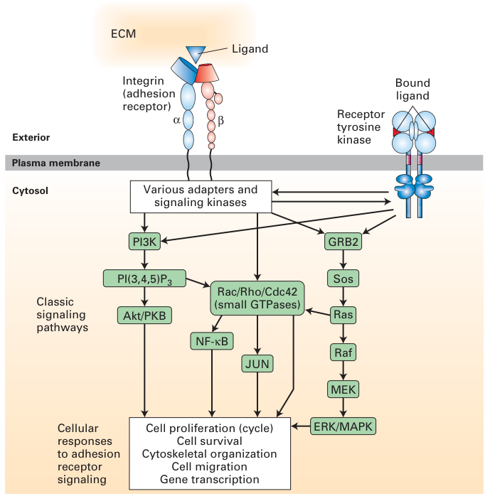
| Integrin (adhesion receptor) | 整合素（黏附受体） |
| Ligand | 配体 |
| Bound ligand | 结合的配体 |
| Plasma membrane | 质膜 |
| Exterior | 胞外 |
| Cytosol | 胞质 |
| ECM | 细胞外基质（ECM） |
| Receptor tyrosine kinase | 受体酪氨酸激酶 |
| Various adapters and signaling kinases | 各种衔接蛋白和信号激酶 |
| PI3K | PI3K |
| PI(3,4,5)P3 | PI(3,4,5)P3 |
| Rac/Rho/Cdc42 (small GTPases) | Rac/Rho/Cdc42（小GTP酶） |
| NF-κB | NF-κB |
| Classic signaling pathways | 经典信号通路 |
| Cellular responses to adhesion receptor signaling | 对黏附受体信号的细胞响应 |
| Cell proliferation (cycle) | 细胞增殖（周期） |
| Cell survival | 细胞存活 |
| Cytoskeletal organization | 细胞骨架组织 |
| Cell migration | 细胞迁移 |
| Gene transcription | 基因转录 |
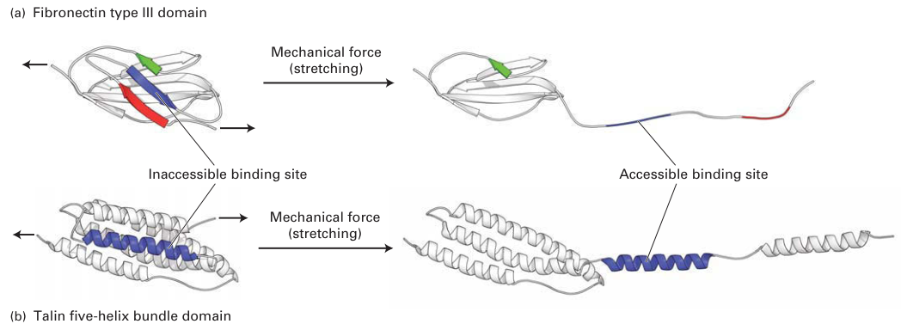
| Fibronectin type III domain | 纤连蛋白III型结构域 |
| Talin five-helix bundle domain | talin五螺旋束结构域 |
| Inaccessible binding site | 不可接近的结合位点 |
| Accessible binding site | 可接近的结合位点 |
| Mechanical force (stretching) | 机械力（牵张） |
- 细胞-细胞与细胞-细胞外基质（ECM）相互作用对于把细胞装配成组织、控制细胞形状和功能以及决定细胞和组织的发育命运都至关重要。疾病可能源于黏附分子结构或表达的异常。
- 细胞黏附分子（CAM）介导直接的细胞-细胞黏附（同型和异型），而黏附受体介导细胞-基质黏附（见图20-1）。这些相互作用把细胞结合成组织，并促进细胞与其环境之间的通讯。
- CAM和黏附受体的胞质结构域结合衔接蛋白，后者介导与细胞骨架纤维和胞内信号蛋白的相互作用。
- CAM的主要家族有钙黏蛋白、选择素、Ig超家族CAM和整合素（见图20-2）。整合素和Ig-CAM超家族的成员也可作为黏附受体发挥功能。
- 紧密的细胞-细胞黏附既需要CAM的顺式（侧向或细胞内）寡聚化，也需要相同（同亲性）或不同（异亲性）CAM之间的反式（黏附或细胞间）相互作用（见图20-3）。顺式和反式相互作用的组合在细胞之间产生尼龙搭扣式的黏附。
- 细胞外基质（ECM）是由蛋白质和多糖构成的动态、复杂的网状结构，对组织的结构和功能有贡献（见表20-2）。ECM分子的主要类别是蛋白聚糖、胶原蛋白以及多黏附基质蛋白，如纤连蛋白和层粘连蛋白。
- CAM和黏附受体连同其胞质衔接蛋白，在"由外向内"和"由内向外"信号转导中发挥重要作用，促进细胞与其周围环境之间至关重要的通讯。
- 具有特化结构和功能的黏附分子的进化，使细胞能够装配成功能各异的多种组织类别。
- 机械转导，即机械刺激或力与生化过程之间的相互转换，由CAM、黏附受体和机械感受器介导。机械转导使细胞能够响应来自其环境的机械力，并对周围环境施加机械力。
20.2 细胞-细胞与细胞-细胞外基质连接及其黏附分子
上皮组织与非上皮组织中的细胞使用许多（但并非全部）相同的细胞-细胞黏附和细胞-基质黏附分子。由于上皮的组织结构相对简单，加之其在进化和发育中的基本作用，我们从上皮开始详细讨论黏附。本节中，我们聚焦于细胞表面那些以离散的斑块或斑点形式成簇含有黏附分子的区域，即锚定连接、紧密连接和缝隙连接。锚定连接和紧密连接在介导细胞-细胞和细胞-ECM黏附中起关键作用，而这三类连接都介导细胞间或细胞-ECM通讯。
上皮细胞具有分明的顶端、侧面和基底表面
形成上皮组织的细胞被称为极化细胞，因为它们的质膜被组织成不同的区域。通常，极化上皮细胞的不同表面被称为顶端（顶部）、侧面（侧部）和基底（基部或底部）表面（图20-10；另见图20-1）。顶端表面的面积常因微绒毛的形成而大幅扩展。黏附分子在产生和维持这些不同表面中起关键作用。
身体不同部位的上皮具有特征性的形态和功能（见图20-10；另见图1-4）。复层（多层）上皮通常充当屏障和保护性表面（如皮肤），而单层上皮常选择性地将离子和小分子从上皮的一侧转运到另一侧。例如，衬于胃的单层柱状上皮向腔内分泌盐酸；衬于小肠的类似上皮则将消化产物从肠腔经细胞转运入血液（见图11-30）。
在单层柱状上皮中，侧面之间的黏附相互作用将细胞连成二维片层，而基底面的黏附相互作用则将细胞连接到下方称为基板的特化细胞外基质。基底面和侧面常在组成上相似，合称基底外侧表面。大多数单层上皮的基底外侧表面通常位于细胞最靠近血管的一侧，而顶端表面则与其他细胞或ECM没有稳定、直接的接触。在具有闭式循环系统的动物中，血液流经的血管其内衬由扁平的、称为内皮细胞的上皮细胞构成。一般而言，上皮细胞是固着、不运动的细胞，因为黏附分子将它们彼此以及与其相关的ECM牢固而稳定地连接在一起。产生牢固、稳定黏附的一个特别重要的机制，是这些分子的某些亚类聚集形成称为细胞连接的簇。
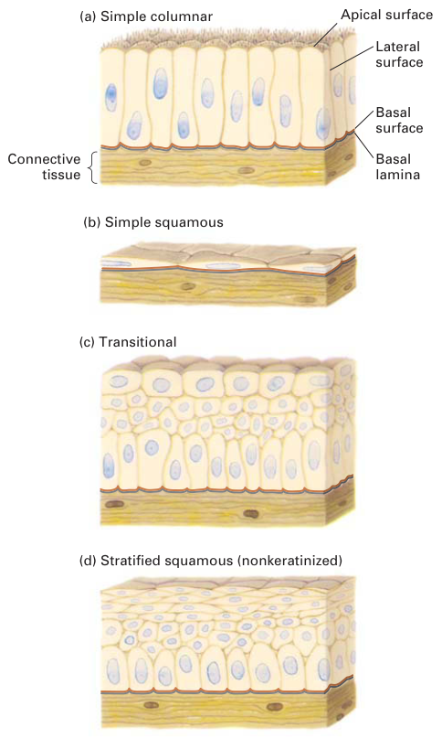
| apical surface | 顶端表面 |
| lateral surface | 侧面 |
| basal surface | 基底表面 |
| basal lamina | 基板 |
| connective tissue | 结缔组织 |
| simple columnar epithelium | 单层柱状上皮 |
| simple squamous epithelium | 单层扁平上皮 |
| transitional epithelium | 变移上皮 |
| stratified squamous epithelium | 复层扁平上皮 |
三类连接介导多种细胞-细胞和细胞-ECM相互作用
片层中的所有上皮细胞都通过特化的连接彼此相连并与ECM相连。尽管数百个分散的、由黏附分子介导的单个相互作用已足以使细胞黏附，但位于细胞连接处的成簇黏附分子在以下方面发挥特殊作用：赋予组织强度和刚性、在细胞外与细胞内空间之间传递信息、控制离子和分子跨细胞层的通过，以及充当离子和分子从一个细胞的细胞质移动到其紧邻细胞的细胞质的通道。对上皮而言尤其重要的是形成这样的连接：它们有助于在细胞之间形成紧密封闭，从而使上皮片层能够充当分子从片层一侧流向另一侧的屏障。
动物细胞连接有三大类，是单层柱状上皮的显著特征（图20-11和表20-3）：锚定连接、紧密连接和缝隙连接。锚定连接和紧密连接执行将组织维系在一起的关键任务。正如我们将看到的，紧密连接还控制溶质穿过构成上皮片层的细胞之间的细胞外空间的流动。紧密连接主要见于上皮细胞，而锚定连接在上皮细胞和非上皮细胞中都可见到。上皮中的锚定连接和紧密连接组织成三个部分：(1)质膜中的黏附蛋白，它们在侧面将一个细胞与另一个细胞（CAM）或与基底面上的ECM（黏附受体）相连；(2)衔接蛋白，它们将CAM或黏附受体连接到细胞骨架丝和信号分子；(3)细胞骨架丝本身。
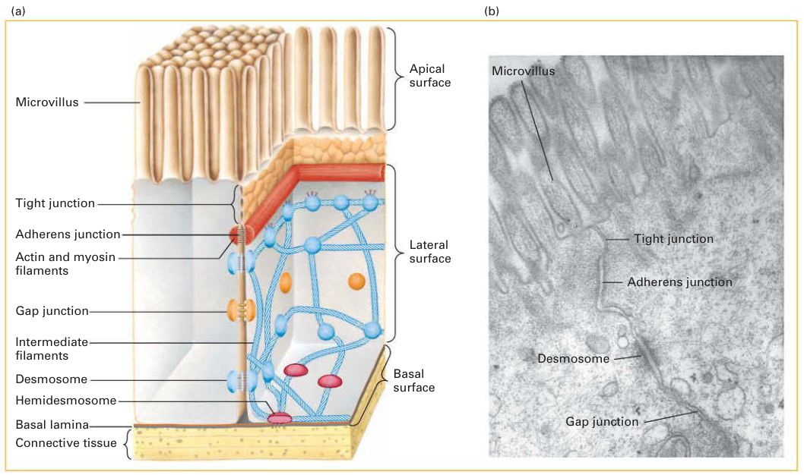
| tight junction | 紧密连接 |
| adherens junction | 黏着连接 |
| desmosome | 桥粒 |
| gap junction | 缝隙连接 |
| hemidesmosome | 半桥粒 |
| microvillus | 微绒毛 |
| intermediate filaments | 中间丝 |
| actin and myosin filaments | 肌动蛋白和肌球蛋白丝 |
| apical surface | 顶端表面 |
| basal surface | 基底表面 |
| lateral surface | 侧面 |
| basal lamina | 基板 |
| connective tissue | 结缔组织 |
第三类连接——缝隙连接，允许小的水溶性分子在相邻细胞的细胞质之间快速扩散。与锚定连接和紧密连接一样，缝隙连接帮助细胞与其环境通讯。然而，它们在结构上与锚定连接和紧密连接非常不同，并且不在增强细胞-细胞和细胞-ECM黏附中起关键作用。缝隙连接在上皮细胞和非上皮细胞中都有，它们类似于植物中称为胞间连丝的独特细胞连接，我们将在20.6节讨论。
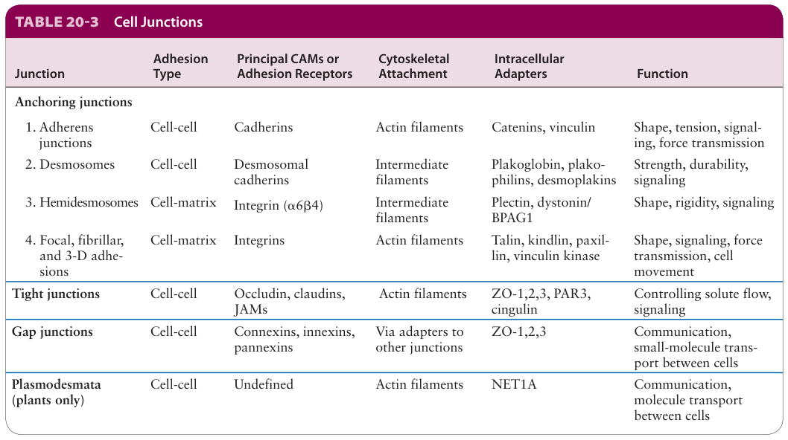
| adherens junction | 黏着连接 |
| desmosome | 桥粒 |
| hemidesmosome | 半桥粒 |
| focal adhesion | 黏着斑 |
| tight junction | 紧密连接 |
| gap junction | 缝隙连接 |
| cadherin | 钙黏蛋白 |
| desmosomal cadherin | 桥粒钙黏蛋白 |
| integrin | 整合素 |
| occludin | occludin |
| claudin | claudin |
| JAM (junctional adhesion molecule) | 连接黏附分子（JAM） |
| connexin | 连接蛋白 |
| plasmodesmata | 胞间连丝 |
细胞中存在四类锚定连接。两类参与细胞-细胞黏附，两类参与细胞-基质黏附。黏着连接连接相邻上皮细胞的侧面膜，通常位于顶端表面附近、紧挨紧密连接下方（见图20-11）。一条由肌动蛋白和肌球蛋白丝与黏着连接形成复合物的环周束带，起张力缆的作用，可从内部支撑细胞，从而控制其形状。上皮细胞和某些其他类型的细胞（如平滑肌细胞和心肌细胞）还通过桥粒（一种有时称为点状桥粒的纽扣状接触点）紧密地结合在一起。半桥粒主要见于上皮细胞的基底面，与黏着接触（也称黏着斑）一起将上皮锚定到下方ECM的组分上，很像把地毯钉住的钉子。黏着连接、桥粒和黏着斑存在于许多不同类型的细胞中；半桥粒似乎仅限于上皮细胞。
与细胞表面平行或穿过细胞走行的中间丝束连接桥粒和半桥粒，赋予细胞形状和刚性；将细胞骨架与黏着接触和黏着连接相连的肌动蛋白丝也是如此。这些连接与细胞骨架之间的紧密相互作用有助于将剪切力从细胞层的某一区域传递到整个上皮，从而为整个上皮细胞层提供强度和刚性。桥粒和半桥粒在维持皮肤上皮完整性方面尤其重要。因此，干扰皮肤中半桥粒锚定的突变可导致一种病症：上皮与其下方的基质脱离，细胞外液在基底外侧表面积聚，迫使皮肤向外膨出，形成水疱。
钙黏蛋白介导黏着连接和桥粒中的细胞-细胞黏附
黏着连接和桥粒中的主要CAM属于钙黏蛋白家族。在脊椎动物中，这个拥有100多个成员的蛋白质超家族可分为至少六个亚家族，包括我们将在下文描述的经典钙黏蛋白和桥粒钙黏蛋白。钙黏蛋白的多样性源于存在多个钙黏蛋白基因以及RNA可变剪接。脊椎动物中有许多不同类型的钙黏蛋白并不奇怪。这些动物种类繁多的组织中有许多不同类型的细胞，它们使用钙黏蛋白来介导黏附和通讯，而不同类型细胞和组织对此的详细要求可能不同。钙黏蛋白超家族的成员还能控制细胞形态，例如某些上皮细胞顶端表面上微绒毛的组装和紧密排列（见图20-10a和20-11a）。脑表达数量最多的不同钙黏蛋白，推测是因为需要形成许多特异的细胞-细胞接触以帮助建立其复杂的连线模式。然而，无脊椎动物只需不到20种钙黏蛋白即可正常运作。
经典钙黏蛋白 经典钙黏蛋白包括E-、N-和P-钙黏蛋白，它们因最初被鉴定的组织类型而得名（分别为上皮、神经和胎盘）。E-和N-钙黏蛋白表达最广泛，尤其是在早期分化期间。极化上皮细胞片层（如衬于小肠或肾小管的那些）沿其侧面含有丰富的E-钙黏蛋白。尽管E-钙黏蛋白集中于黏着连接，但它遍布整个侧面，被认为在那里连接相邻的细胞膜。
用L细胞（一株培养的小鼠成纤维细胞）进行的实验结果表明，E-钙黏蛋白优先介导同亲性相互作用。L细胞不表达任何钙黏蛋白，彼此之间以及与其他类型细胞的黏附都很差。当把E-钙黏蛋白基因导入L细胞后，发现这些细胞优先黏附于其他表达E-钙黏蛋白的细胞（图20-12）。这些经工程改造、表达钙黏蛋白的L细胞彼此之间以及与从肺中分离的上皮细胞形成上皮样的聚集物。尽管大多数E-钙黏蛋白主要表现同亲性结合，但有些介导异亲性相互作用。
钙黏蛋白的黏附性依赖于细胞外Ca2+的存在；正是这一特性（钙黏附）赋予了它们这个名字。例如，当表达E-钙黏蛋白的L细胞浸浴在低Ca2+溶液中时，其黏附被阻止（见图20-12）。有些黏附分子需要细胞外液中存在一定的最低量的Ca2+才能正常发挥功能，而另一些（如IgCAM）则不依赖Ca2+。
E-钙黏蛋白在黏附中的作用也可用称为Madin-Darby犬肾（MDCK）细胞的培养上皮细胞实验来证明（见图4-4）。在这些细胞中，一种带绿色荧光蛋白标记的E-钙黏蛋白被用来显示：E-钙黏蛋白簇介导细胞的初始附着以及随后细胞拉链式地连成片层（图20-13）。在该实验体系中，加入一种结合E-钙黏蛋白、阻止其同亲性相互作用的抗体，会阻断MDCK细胞彼此之间Ca2+依赖性的附着以及随后细胞间黏着连接的形成。
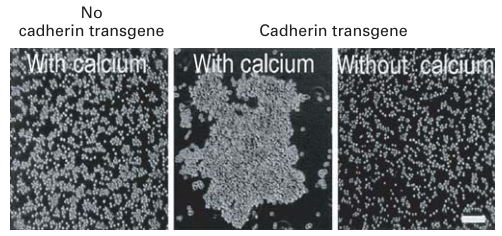
| no cadherin transgene | 无钙黏蛋白转基因 |
| cadherin transgene | 钙黏蛋白转基因 |
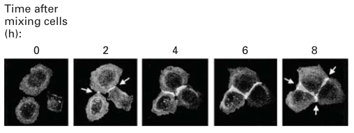
| time after mixing cells (h) | 混合细胞后的时间（h） |
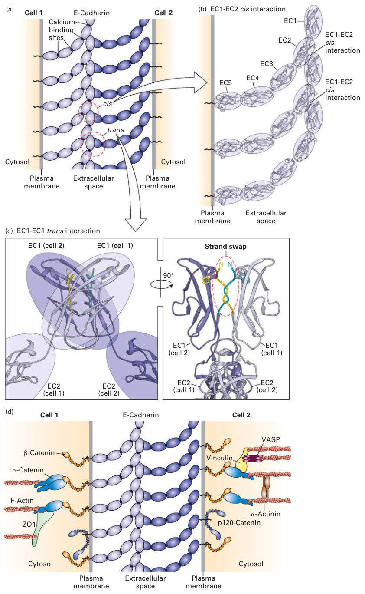
| E-cadherin | E-钙黏蛋白 |
| extracellular space | 细胞外空间 |
| plasma membrane | 质膜 |
| cytosol | 细胞质 |
| F-actin | F-肌动蛋白 |
| β-catenin | β-联蛋白 |
| EC1-EC2 cis interaction | EC1-EC2顺式相互作用 |
| EC1-EC1 trans interaction | EC1-EC1反式相互作用 |
| strand swap | 链交换 |
| calcium-binding sites | 钙结合位点 |
| ZO-1 | ZO-1 |
每个经典钙黏蛋白分子含有一个跨膜结构域、一个相对较短的C端胞质结构域和五个细胞外"钙黏蛋白"结构域（称为EC1–EC5）（见图20-2）。细胞外结构域是Ca2+结合和钙黏蛋白介导的细胞-细胞黏附所必需的。经典钙黏蛋白介导的黏附既涉及顺式侧向聚集（细胞内）又涉及反式黏附（细胞间）的分子相互作用（见图20-3和20-14a-c）。在位于钙黏蛋白重复序列之间的每个位点上结合三个Ca2+（见图20-2和20-14a），可稳定细胞外结构域的细长而弯曲的结构。正如我们稍后将看到的，钙黏蛋白细胞外结构域的弯曲结构对于稳定钙黏蛋白分子之间顺式和反式结合的恰当分子互补性是必需的。钙黏蛋白的顺式和反式相互作用，连同它们与胞质衔接蛋白和细胞骨架分子的相互作用，使钙黏蛋白能够拉链式地排列成黏附阵列。一个钙黏蛋白分子的EC1结构域与相邻细胞上另一个钙黏蛋白分子的EC1结构域结合，负责反式结合（图20-14；另见图20-3）。尽管用分离的结构域在溶液中测得的EC1–EC1同亲性结合的解离常数（Kd）约为10−5–10−4 mol/L（相对较弱，即低亲和力结合），但相邻细胞上完整钙黏蛋白分子阵列中的多个低亲和力相互作用累加起来，产生了非常紧密的细胞间黏附。
测定钙黏蛋白细胞外结构域的结构，结合对关键结合结构域的许多突变体的结构和结合特性的分析，为经典钙黏蛋白介导的细胞黏附所依据的顺式和反式相互作用提供了清晰的图景。钙黏蛋白顺式和反式结合相互作用的关键特征是：(1)五个细胞外钙黏蛋白结构域的钙依赖性弯曲，这使得EC1和EC2结构域具有恰当的相对取向（见图20-2和20-14）；(2)对于顺式相互作用，一个EC1结构域的一侧与同一膜上相邻分子EC2结构域上的互补表面结合（见图20-2和20-14）；(3)对于反式相互作用，EC1结构域的一个不同表面与相邻细胞上钙黏蛋白分子的EC1结构域结合。当两个EC1结构域各自N端的一小段蛋白质摆出并取代其结合伴侣的相应片段（链交换；见图20-14）时，反式EC1–EC1结合被稳定。
经典钙黏蛋白的C端胞质结构域通过衔接蛋白与肌动蛋白细胞骨架相连（见图20-14d）。这些连接对于牢固黏附是必需的，因为肌动蛋白细胞骨架产生的张力适度增加会诱导形成更大的钙黏蛋白簇和更强的细胞间黏附。伴随肌动蛋白细胞骨架施加的力增加而出现的一些钙黏蛋白介导黏附的增强，似乎是由衔接蛋白之一α-联蛋白介导的，它是一种机械感受器，将钙黏蛋白连接到肌动蛋白丝（见图20-14d），并在受力时改变形状（伸展）。这种伸展暴露出α-联蛋白上供其他衔接分子结合的额外位点。破坏经典钙黏蛋白与α-联蛋白或β-联蛋白之间的相互作用——β-联蛋白是另一种将经典钙黏蛋白连接到肌动蛋白丝的常见衔接蛋白（见图20-14d）——会显著降低钙黏蛋白介导的细胞-细胞黏附。这种破坏在肿瘤细胞中自发发生，肿瘤细胞有时不表达α-联蛋白；也可通过耗尽胞质中可及的β-联蛋白库在实验上诱导。钙黏蛋白的胞质结构域还与p120-联蛋白等细胞内信号分子相互作用。有趣的是，β-联蛋白具有双重作用：它不仅介导细胞骨架附着，还作为一种信号分子，易位到细胞核并在Wnt信号通路中改变基因转录（见图16-30）。
经典钙黏蛋白在组织分化过程中起关键作用。每种经典钙黏蛋白都有其特征性的组织分布。在分化过程中，细胞表面钙黏蛋白的数量或类型发生变化，影响细胞-细胞黏附、细胞迁移和细胞分裂的许多方面。例如，形态发生过程中组织的正常重组常伴随不运动的上皮细胞转变为称为间质细胞的运动细胞，后者是其他组织的前体。这种上皮-间质转化（EMT）与E-钙黏蛋白表达的减少相关（图20-15a, b）。EMT也与病理相关，例如上皮细胞转变为恶性癌细胞。例如，某些导管型乳腺肿瘤和遗传性弥漫性胃癌（图20-15c）的特征是E-钙黏蛋白活性的丧失。众所周知，动物细胞的细胞-细胞接触能抑制细胞增殖。在组织发育过程中，分裂的上皮细胞一旦形成了界限分明、紧密结合的上皮，就不需要进一步分裂，除非它们受损或接到进行EMT的信号。现已清楚，用于抑制上皮中上皮细胞增殖的一种机制是E-钙黏蛋白和联蛋白介导的对控制细胞增殖的Hippo通路的调控（见第19章）。
黏着连接中由钙黏蛋白介导的牢固上皮细胞-细胞黏附，使得上皮中能够形成第二类细胞间连接——紧密连接，我们很快将讨论它。
鼻病毒（RV）感染是普通感冒最常见的原因，而感染强毒的C类鼻病毒（RV-C）可引起更严重的疾病，包括哮喘加重。要进入细胞并复制，RV-C必须与细胞表面受体结合。最近的研究已鉴定出一种称为CDHR3的钙黏蛋白家族成员，它在人气道上皮细胞中高表达，是RV-C的受体。像RV-C这样的病原体常常进化出利用其靶（宿主）组织中具有正常功能的蛋白质的能力。遗传学研究显示，一个在人类中自然发生的、使CDHR3的EC5结构域中半胱氨酸变为酪氨酸（C → Y）的突变，与儿童哮喘的喘息性疾病和住院增加相关。在培养细胞中，这种C → Y突变提高了CDHR3的细胞表面表达以及RV-C的结合和复制。破坏RV-C/钙黏蛋白（CDHR3）相互作用的疗法有潜力预防或治疗由RV-C引起的呼吸系统疾病。■
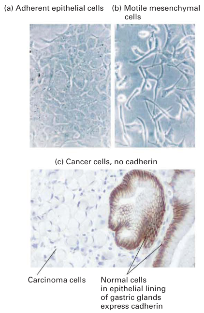
| adherent epithelial cells | 黏附的上皮细胞 |
| motile mesenchymal cells | 运动的间质细胞 |
| cancer cells, no cadherin | 癌细胞，无钙黏蛋白 |
| carcinoma cells | 癌细胞 |
桥粒钙黏蛋白 桥粒（图20-16）含有两种特化的钙黏蛋白——桥粒芯蛋白和桥粒胶蛋白，它们的胞质结构域不同于经典钙黏蛋白中的胞质结构域。桥粒钙黏蛋白的胞质结构域与plakoglobin（结构与β-联蛋白相似）和plakophilin等衔接蛋白结合，而这些衔接蛋白又与plakin衔接蛋白家族的一个成员——桥粒斑蛋白结合。这些衔接蛋白形成桥粒特征性的厚胞质斑。桥粒斑蛋白直接介导斑与中间丝的结合。
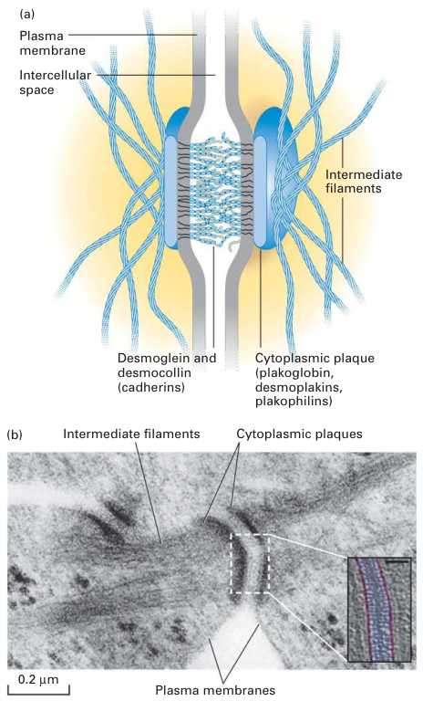
| intermediate filaments | 中间丝 |
| plasma membrane | 质膜 |
| intercellular space | 细胞间隙 |
| cytoplasmic plaque | 胞质斑 |
| plakoglobin | plakoglobin |
| desmoplakin | 桥粒斑蛋白 |
| plakophilin | plakophilin |
| desmoglein | 桥粒芯蛋白 |
| desmocollin | 桥粒胶蛋白 |
钙黏蛋白桥粒芯蛋白是通过研究一种不寻常但富有启发性的皮肤病——寻常型天疱疮（一种自身免疫病）而被鉴定的。自身免疫病患者会合成攻击自身的"自身"抗体，这些抗体结合体内的一种正常蛋白质。在寻常型天疱疮中，自身抗体破坏上皮细胞之间的黏附，导致皮肤和黏膜起水疱。患者体内占优势的自身抗体被证明对桥粒芯蛋白特异；事实上，将这类抗体加入正常皮肤会诱导水疱形成和细胞黏附的破坏。■
整合素介导细胞-ECM黏附，包括上皮细胞半桥粒中的黏附
为了稳定地锚定到实体组织和器官上，单层柱状上皮片层必须通过其基底面牢固地附着到下方的ECM（基板）上。这种附着通过称为整合素的黏附受体实现（见图20-2），整合素既位于称为半桥粒的锚定连接内部，也位于其外部（见图20-11a）。半桥粒由整合膜蛋白组成，这些蛋白通过胞质衔接蛋白（如plakin）连接到角蛋白类中间丝。上皮半桥粒中的主要ECM黏附受体是整合素α6β4。
整合素在多种上皮细胞和非上皮细胞中充当黏附受体和CAM，介导许多细胞-基质和细胞-细胞相互作用（表20-4）。在脊椎动物中，已知至少有24种整合素异二聚体，它们由18种α亚基和8种β亚基以各种αβ异二聚体组合构成。一种β链可与几种不同类型α链中的任意一种相互作用，形成结合不同配体的不同整合素。这种组合多样性的现象使得相对较少的组分数目能够服务于大量不同的功能。尽管大多数细胞表达几种结合相同或不同配体的不同整合素，但许多整合素主要在某些类型的细胞中表达。许多整合素不仅能结合一种以上的配体，而且有些配体可结合几种不同整合素中的任意一种。
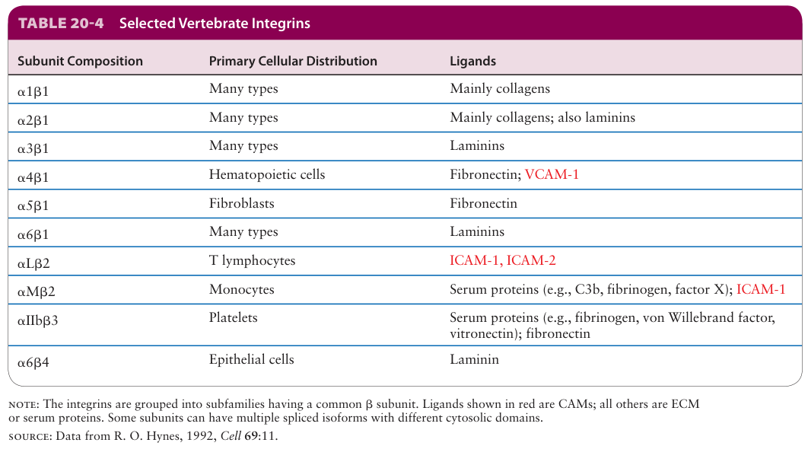
| integrin | 整合素 |
| α subunit | α亚基 |
| β subunit | β亚基 |
| fibronectin | 纤连蛋白 |
| laminin | 层粘连蛋白 |
| collagen | 胶原蛋白 |
| VCAM-1 | VCAM-1 |
| ICAM-1 | ICAM-1 |
| ICAM-2 | ICAM-2 |
| fibrinogen | 纤维蛋白原 |
| von Willebrand factor | 冯·维勒布兰德因子 |
| vitronectin | 玻连蛋白 |
| hematopoietic cells | 造血细胞 |
| platelets | 血小板 |
| fibroblasts | 成纤维细胞 |
所有整合素似乎都从两个古老的通用亚群进化而来：结合含有三肽序列Arg-Gly-Asp（通常称为RGD基序）的蛋白质的那些（纤连蛋白就是这样的蛋白质），以及结合层粘连蛋白的那些。几种整合素α亚基含有一个独特的插入结构域，即I结构域，它可介导某些整合素与ECM中各种胶原蛋白的结合。一些带有I结构域的整合素仅表达于白细胞（白血细胞）以及红、白血细胞前体（造血）细胞上。I结构域还识别其他细胞上的CAM，包括Ig超家族成员（如ICAM、VCAM），因此参与细胞-细胞黏附。
整合素通常对其配体表现出低亲和力，解离常数（Kd）在10−6与10−7 mol/L之间。然而，数百或数千个整合素分子与细胞上或ECM中配体结合所产生的多个弱相互作用，使细胞能够牢固地锚定于表达配体的靶标。
整合素分子的α亚基和β亚基的部分区域共同构成主要的细胞外配体结合位点（见图20-2）。配体与整合素的结合还需要二价阳离子的同时结合。与其他黏附分子一样，整合素的胞质区与衔接蛋白相互作用，后者进而结合细胞骨架和细胞内信号分子（见图20-8）。大多数整合素通过衔接蛋白与肌动蛋白细胞骨架相连，其中包括通过ECM分子层粘连蛋白将上皮细胞基底面连接到基板的两种整合素。然而，有些整合素与中间丝相互作用。半桥粒中α6β4整合素的β4链胞质结构域（见图20-1）比其他整合素β链的胞质结构域长得多，它结合特化的衔接蛋白，后者进而与角蛋白类中间丝相互作用（见表20-4）。其他整合素（例如α3β1）是黏着接触中的黏附受体，将上皮基板与肌动蛋白细胞骨架相连（见图20-1）。
正如我们将看到的，整合素及其ECM配体的多样性使整合素能够参与广泛的关键生物学过程，包括炎症反应以及形态发生过程中细胞向正确位置的迁移。通过工程改造使各种整合素亚基基因发生突变的敲除小鼠所表现出的缺陷，凸显了整合素在多种过程中的重要性。这些缺陷包括发育、血管形成、白细胞功能、炎症、骨重塑和血液凝固方面的重大异常。尽管存在差异，所有这些过程都依赖于整合素介导的细胞骨架与ECM或其他细胞上CAM之间的相互作用。
除黏附功能外，整合素还能介导由外向内和由内向外信号转导（见图20-8）。细胞外配体与整合素的结合，可通过结合在整合素胞质区的衔接蛋白影响细胞骨架和细胞内信号通路（由外向内信号转导）。反之，细胞内信号通路可改变整合素的结构，从而改变其黏附细胞外配体以及介导细胞-细胞和细胞-ECM相互作用的能力（由内向外信号转导）。整合素介导的信号通路影响的进程多种多样，如细胞存活、细胞增殖和程序性细胞死亡（见第21章）。
紧密连接封闭体腔并限制膜组分的扩散
为使极化上皮细胞发挥屏障和选择性转运介体的功能，其顶端膜和基底外侧膜周围的细胞外液必须保持分隔。相邻上皮细胞之间的紧密连接通常位于紧靠顶端表面下方环绕细胞的一条带内（图20-17；另见图20-11）。这些特化的连接形成一道屏障，封闭肠腔等体腔，并将血液与中枢神经系统的脑脊液分隔开（即血脑屏障）。
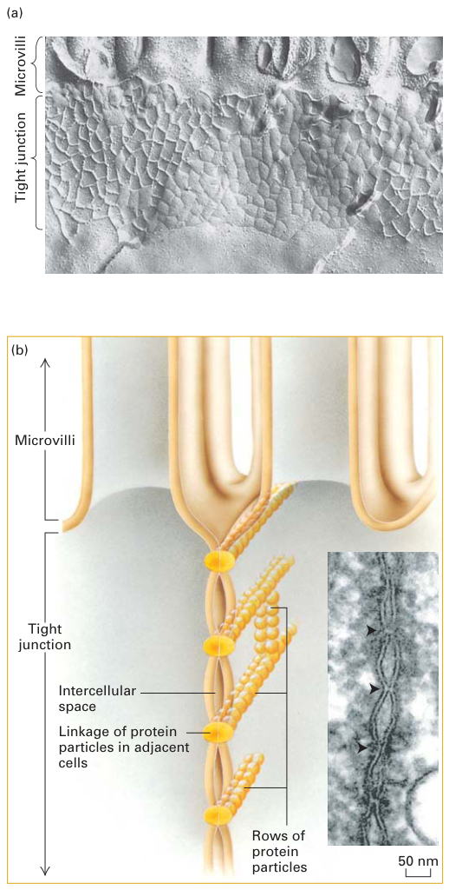
| tight junction | 紧密连接 |
| microvilli | 微绒毛 |
| intercellular space | 细胞间隙 |
| rows of protein particles | 成行的蛋白质颗粒 |
| linkage of protein particles in adjacent cells | 相邻细胞中蛋白质颗粒的连接 |
紧密连接阻止大分子以及（在不同程度上）小的水溶性分子和离子通过细胞之间的间隙穿过上皮扩散。它们还通过阻止膜蛋白和糖脂在质膜顶端区和基底外侧区之间的扩散，帮助建立并维持上皮细胞的极性，确保这些区域含有不同的膜组分。的确，质膜外质面（见第7章）顶端区和基底外侧区的脂质组成是不同的。几乎所有细胞表面糖脂都局限于顶端膜的外质面，所有通过糖基磷脂酰肌醇（GPI）锚与膜相连的蛋白质也是如此（见图7-19）。相反，在上皮细胞中，质膜胞质面的顶端区和基底外侧区具有均一的膜组成；它们的脂质和蛋白质显然可从膜的一个区域侧向扩散到另一个区域。
紧密连接由质膜蛋白的细带构成，这些细带完全环绕细胞并与相邻细胞上类似的细带接触。在电子显微镜下观察细胞的紧密连接薄切片时，相邻细胞的侧面似乎以一定间隔彼此接触，甚至在紧靠顶端表面下方的区域融合（见图20-11b）。在冷冻断裂制备中，紧密连接表现为质膜中相互咬合的嵴与沟网络（图20-17a）。极高的放大倍数显示，直径为3–4 nm的蛋白质颗粒排成行，构成紧密连接冷冻断裂显微照片中所见的嵴。在图20-17b所示的模型中，紧密连接由这些颗粒的双行构成，每行由一个细胞提供。用蛋白酶胰蛋白酶处理上皮会破坏紧密连接，这支持了蛋白质是这些连接必需的结构组分的观点。
紧密连接中发现的两种主要整合膜蛋白是occludin和claudin（源自拉丁语claudere，"关闭"）。当研究人员用使occludin基因失活的突变构建小鼠时——occludin曾被认为是紧密连接形成所必需的——这些小鼠竟然仍有形态上明显的紧密连接。进一步的分析导致发现了claudin。这两种蛋白都有四个跨膜α螺旋（图20-18）。哺乳动物claudin基因家族编码至少27种同源蛋白，它们表现出不同的组织特异性表达模式。还发现一组连接黏附分子（JAM）参与同亲性黏附和紧密连接的其他功能。JAM和另一种连接蛋白——柯萨奇病毒与腺病毒受体（CAR）——含有单个跨膜α螺旋，属于CAM的Ig超家族。一个细胞质膜中成行的occludin、claudin和JAM的细胞外结构域，显然与相邻细胞中相同蛋白的类似行形成极紧密的连接，从而形成紧密封闭。Ca2+依赖性的钙黏蛋白介导的黏附在紧密连接的形成、稳定性和功能中也起重要作用。
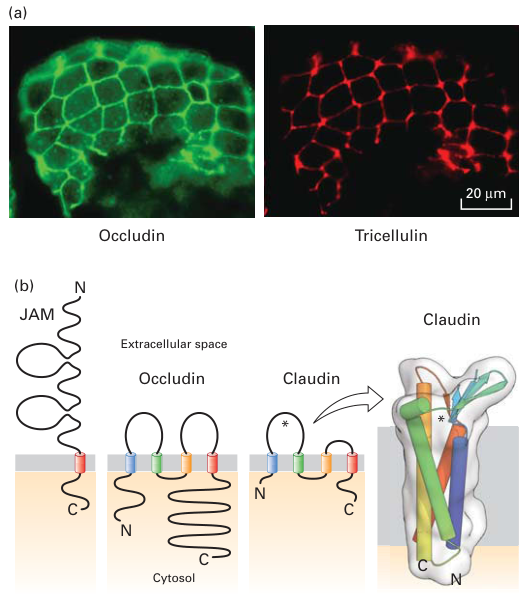
| occludin | occludin |
| tricellulin | tricellulin |
| JAM | 连接黏附分子（JAM） |
| claudin | claudin |
| cytosol | 细胞质 |
| extracellular space | 细胞外空间 |
在通过紧密连接彼此相连的三个细胞的交汇处（见图20-13和图20-18a），还有两种跨膜蛋白被并入紧密连接：tricellulin，它有四个跨膜螺旋，与occludin和claudin一样；以及angulin，它们有单个跨膜螺旋和一个细胞外免疫球蛋白结构域，似乎是细胞交汇处组装tricellulin所必需的。
与黏着连接和桥粒的情况一样，胞质衔接蛋白及其与细胞骨架的连接是紧密连接的关键组分。例如，occludin长长的C端胞质片段与一些大型多结构域衔接蛋白中的PDZ结构域结合。PDZ结构域长约80至90个氨基酸，存在于多种胞质蛋白中；它们介导与其他胞质蛋白或特定质膜蛋白C端的结合。含有一个PDZ结构域的胞质蛋白常常含有不止一个PDZ结构域。在人类基因组中，数百种蛋白质共有250多个PDZ结构域。具有多个PDZ结构域的蛋白质可充当支架，把蛋白质组装成更大的功能性复合物。有几种含多个PDZ结构域的衔接蛋白与紧密连接相关，包括闭锁小带（ZO）蛋白ZO-1、ZO-2和ZO-3，它们不仅与occludin、claudin及其他衔接蛋白和信号蛋白相互作用，还介导与肌动蛋白纤维的结合。这些相互作用似乎稳定了occludin与claudin分子之间的连接，而这种连接对于维持紧密连接的完整性是必需的。ZO蛋白还可充当黏着连接（见图20-14）和缝隙连接的衔接蛋白。
一个简单的实验证明了紧密连接对某些水溶性物质的不通透性。在该实验中，将氢氧化镧（一种高分子的电子致密胶体）注入实验动物的胰腺血管；几分钟后，将胰腺上皮腺泡细胞固定并制备供显微镜观察。如图20-19所示，氢氧化镧从血液扩散到分隔相邻腺泡细胞侧面的空间中，但不能越过紧密连接渗透过去。
由于紧密连接的存在，许多营养物质不能经细胞之间穿过肠上皮；相反，它们的转运在很大程度上是通过跨细胞途径、借助特定的膜结合转运蛋白实现的（图20-20；另见图11-30）。
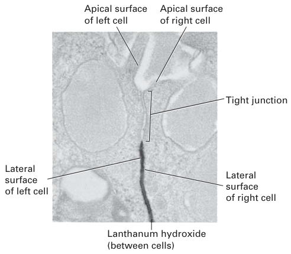
| apical surface | 顶端表面 |
| lanthanum hydroxide | 氢氧化镧 |
| tight junction | 紧密连接 |
| lateral surface | 侧面 |
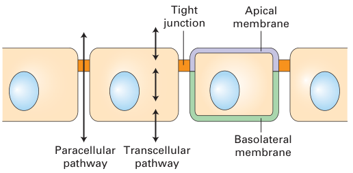
| basolateral membrane | 基底外侧膜 |
| transcellular pathway | 跨细胞途径 |
| paracellular pathway | 旁细胞途径 |
| tight junction | 紧密连接 |
| apical membrane | 顶端膜 |
然而，紧密连接提供的扩散屏障并非绝对，因为它们表现出大小选择性和离子选择性的通透性。因此，某些小分子和离子可通过旁细胞途径从上皮的一侧移动到另一侧（见图20-20）。选择性通透性的重要性，从建立它的分子的进化保守性以及它被破坏时出现的疾病中可见一斑。例如，如果选择性通透性被破坏，小鼠胚胎就无法正常发育，因为上皮两侧无法维持恰当的液体平衡。同样，肾脏依赖恰当的紧密连接通透性来建立体液正常调节和废物清除所必需的离子梯度。至少部分由于位于不同紧密连接中的不同类型claudin分子具有不同特性，紧密连接对离子、小分子和水的通透性在不同上皮组织之间差异极大。claudin中的大细胞外环（见图20-18）被认为在决定特定claudin亚型赋予紧密连接的选择性通透性方面起主要作用。
紧密连接的通透性可被细胞内信号通路改变，尤其是G蛋白和环腺苷酸偶联的通路（见第15章）。紧密连接通透性的调控常通过测量离子流（电阻，称为跨上皮电阻）或放射性或荧光分子跨MDCK或其他上皮细胞单层的移动来研究。
旁细胞转运的重要性在几种人类疾病中显而易见。在遗传性低镁血症中，claudin16基因的缺陷阻止了肾脏中镁的正常旁细胞流动。该缺陷导致血镁水平异常低下，可引起惊厥。此外，claudin14基因的突变引起遗传性耳聋，显然是通过改变内耳耳蜗毛细胞上皮周围的转运所致。
一些病原体已进化出利用紧密连接中分子的能力。有些把连接蛋白用作"共受体"，在感染细胞之前先附着于细胞（例如，丙型肝炎病毒利用claudin-1和occludin，连同另外两种共受体，进入肝细胞）。另一些则破坏紧密连接屏障，通过旁细胞移动穿过上皮；还有一些产生改变屏障功能的毒素。例如，霍乱弧菌（引起霍乱的肠道细菌）产生的毒素通过改变紧密连接的组成或活性，改变肠上皮的通透性屏障。霍乱弧菌还释放一种蛋白酶，通过降解occludin的细胞外结构域来破坏紧密连接。其他细菌毒素可影响肠上皮细胞中膜转运蛋白的离子泵送活性。毒素诱导的紧密连接通透性改变（旁细胞转运增加）和蛋白质介导的离子泵送改变（跨细胞转运增加）可导致体内离子和水大量流失到胃肠道，进而引起腹泻和可能致命的脱水（见第11章）。■
由连接蛋白构成的缝隙连接允许小分子直接在相邻细胞的细胞质之间通过
早期的组织电子显微照片揭示了具有特征性细胞间间隙的细胞-细胞接触位点（图20-21a）。这一特征几乎见于所有与其他细胞接触的动物细胞中，促使早期形态学家将这些区域称为缝隙连接。回顾来看，这些连接最重要的特征并非2–4 nm的间隙本身，而是一组界限分明的圆柱状颗粒，它们横跨间隙并构成连接相邻细胞细胞质的孔道（图20-21b, c）。正如我们将在本章后面看到的，植物细胞也组装连接相邻细胞细胞质的孔道，但这些称为胞间连丝的通道在结构上与缝隙连接差异很大。隧道纳米管是相对较新发现的膜结合管，连接动物细胞的细胞质。由于它们与胞间连丝的相似性超过与缝隙连接的相似性，将随胞间连丝一起讨论。
在许多动物组织中，从几个到数千个缝隙连接颗粒成簇聚集在斑块中（例如沿上皮细胞的侧面；见图20-11）。当质膜被纯化并剪切为小片段时，会产生一些主要含有缝隙连接斑块的片断。由于蛋白质含量相对较高，这些片段的密度高于质膜主体，可通过平衡密度梯度离心纯化（见图4-37）。当垂直于膜观察这些制备物时，缝隙连接表现为排列成阵列的六边形颗粒，它们包围着充水的通道（见图20-21b）。
缝隙连接的有效孔径可通过以下方法测量：向细胞注射一种荧光染料，该染料与各种大小的、不能透过膜双层的分子共价连接，然后用荧光显微镜观察该染料是否进入邻近细胞。哺乳动物细胞之间的缝隙连接允许直径大到1.2 nm的分子通过。在昆虫中，这些连接可通透直径大到2 nm的分子。一般来说，小于1200 Da的分子可自由通过，大于2000 Da的分子则不能通过；中等大小分子的通过则多变且有限。因此，离子、许多细胞大分子的低分子量前体、中间代谢产物以及小的细胞内信号分子都能通过缝隙连接从一个细胞传递到另一个细胞。
在神经组织中，一些神经元通过缝隙连接相连，离子经此快速通过，从而允许电信号极快地传递。通过这种称为电突触的连接进行的冲动传递，几乎比化学突触快一千倍（见第22章）。缝隙连接也存在于许多非神经组织中，在那里帮助整合许多细胞的电活动和代谢活动。例如在心脏中，缝隙连接在心肌细胞之间快速传递离子信号，而心肌细胞通过桥粒紧密结合在一起。因此，缝隙连接促成了心跳期间心肌细胞受电刺激的协调收缩。如第15章所讨论的，一些细胞外激素信号诱导产生或释放称为第二信使的小分子细胞内信号分子（例如环腺苷酸、IP3和Ca2+），它们调节细胞代谢。由于许多第二信使可通过缝隙连接在细胞之间转移，对一个细胞的激素刺激有可能触发该细胞及其许多邻近细胞的协调应答。这种缝隙连接介导的信号转导在例如胰腺分泌消化酶以及肠道中协调的肌肉收缩波（蠕动）中起重要作用。缝隙连接介导转运的另一个生动例子是代谢偶联或代谢合作现象，即一个细胞将营养物质或中间代谢物转移给自身无法合成它们的邻近细胞。缝隙连接在卵巢中卵前体（卵母细胞）的发育中起关键作用，它们介导代谢物和信号分子（如环鸟苷酸）在卵母细胞与其周围的颗粒细胞之间以及相邻颗粒细胞之间的移动。
图20-21c–d显示了当前关于缝隙连接结构的模型。脊椎动物的缝隙连接由连接蛋白构成，这是一个结构相关的跨膜蛋白家族，分子量在26,000与60,000之间。每个脊椎动物六边形颗粒由12个非共价结合的连接蛋白分子组成：六个在一个质膜中形成一个称为连接体的圆柱状半通道，它与相邻细胞膜中的连接体相接，在细胞之间形成一个连续的水相通道（直径约14 Å）。每个单独的连接蛋白分子有四个跨膜α螺旋，其拓扑结构与claudin相似（见图20-18），因此每个连接体半通道中有24个跨膜α螺旋。
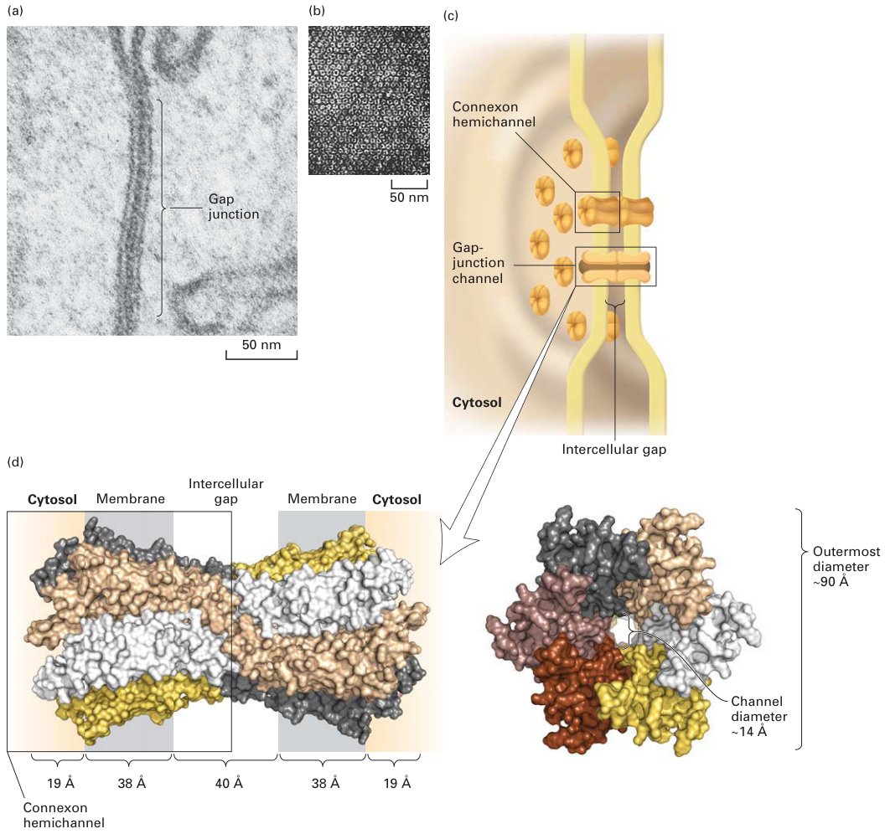
| gap junction | 缝隙连接 |
| gap-junction channel | 缝隙连接通道 |
| connexon hemichannel | 连接体半通道 |
| intercellular gap | 细胞间间隙 |
| cytosol | 细胞质 |
| membrane | 膜 |
一个完全不同的蛋白家族——innexin，构成无脊椎动物的缝隙连接。第三个innexin样蛋白家族——pannexin，已在脊椎动物和无脊椎动物中都有发现。Pannexin形成六聚体半通道（pannexon），其开放可受膜电位变化或机械应力的调控。开放时，pannexon允许小分子（如ATP）和离子在细胞内与细胞外空间之间直接交换。Pannexin被认为在ATP从细胞释放到细胞外空间的过程中起关键作用。细胞外ATP（以及ADP和AMP）可作为细胞间信使或递质，通过结合并激活靶细胞上的细胞表面嘌呤能受体P1、P2X或P2Y而发挥作用。
人类有21个不同的连接蛋白基因，不同细胞类型表达不同的连接蛋白组。这种多样性的存在，加上构建连接蛋白基因失活突变小鼠的工作，凸显了连接蛋白在多种细胞系统中的重要性。有些细胞表达单一连接蛋白，形成同型连接体。然而，大多数细胞至少表达两种连接蛋白；这些不同的蛋白质可组装成异聚连接体，后者又形成异型缝隙连接通道。通道组成的多样性导致通道通透性的差异。例如，由43-kDa连接蛋白亚型Cx43（表达最广泛的连接蛋白）构成的通道，对ADP和ATP的通透性是由Cx32（32 kDa）构成的通道的100多倍。
缝隙连接的通透性受连接蛋白翻译后修饰（如磷酸化）的调控，并对环境条件的变化敏感，如细胞内pH和Ca2+浓度、膜电位以及相邻互联细胞之间的细胞间电位（"电压门控"）。连接蛋白的N端似乎在门控机制中尤为重要。因此，如同许多离子通道一样（见第11章），某些缝隙连接中的通道既可以开放也可以关闭。缝隙连接生理性调控的一个例子发生在哺乳动物分娩期间。哺乳动物子宫的平滑肌细胞在分娩时必须强烈而同步地收缩以排出胎儿。为促进这种协调活动，在分娩前和分娩期间，这些细胞中主要连接蛋白Cx43的量增加约5至10倍，缝隙连接的数量和大小也增加，而这一切在产后期（分娩后）迅速逆转。
连接蛋白的组装、它们在细胞内的运输以及功能性缝隙连接的形成，显然依赖于N-钙黏蛋白及其相关的衔接蛋白（如α-和β-联蛋白、ZO-1和ZO-2）以及桥粒蛋白（plakoglobin、桥粒斑蛋白和plakophilin-2）。ZO-1和ZO-2中的PDZ结构域结合Cx43的C端，并介导其与联蛋白和N-钙黏蛋白的相互作用。这些关系的重要性在心脏中尤为明显，心脏依赖缝隙连接实现快速协调的电偶联，并依赖相邻的黏着连接和桥粒实现机械偶联以在心肌细胞之间实现正常心脏功能所需的电活动和运动的细胞间整合。值得注意的是，ZO-1充当黏着连接（见图20-14）、紧密连接和缝隙连接的衔接蛋白，提示它和其他衔接蛋白能帮助整合这些不同连接的形成和功能。
连接蛋白基因的突变引起至少八种人类疾病，包括感觉神经性耳聋（Cx26和Cx31）、白内障或心脏畸形（Cx43、Cx46和Cx50），以及X连锁型夏科-马里-图思病（Cx32），后者的特征是周围神经的进行性退化。■
- 上皮细胞具有分明的顶端、基底和侧面。许多上皮细胞顶端表面上突出的微绒毛大大扩展了细胞的表面积。
- 三大类细胞连接——锚定连接、紧密连接和缝隙连接——将上皮细胞组装成片层并介导它们之间的通讯（见图20-1和20-11）。锚定连接可进一步分为黏着连接、黏着接触、桥粒和半桥粒。
- 黏着连接和桥粒是含钙黏蛋白的锚定连接，它们结合相邻细胞的膜，赋予整个组织强度和刚性。
- 钙黏蛋白是负责上皮和其他组织中细胞之间Ca2+依赖性相互作用的细胞黏附分子（CAM）。它们通过介导侧向的细胞内（顺式）和黏附性的细胞间（反式）相互作用，促进牢固的细胞-细胞黏附。
- 与钙黏蛋白、其他CAM和黏附受体的胞质结构域结合的衔接蛋白，介导细胞骨架分子和信号分子与质膜的结合（见图20-8和20-14）。牢固的细胞-细胞黏附依赖于相互作用的CAM与细胞骨架的连接。
- 半桥粒是含整合素的锚定连接，将细胞附着到下方细胞外基质的组分上。
- 整合素是一个大型的αβ异二聚体细胞表面蛋白家族，在众多组织中既介导细胞-细胞和细胞-基质黏附，又介导由内向外和由外向内信号转导。
- 紧密连接阻断蛋白质和某些脂质在质膜平面内的扩散，有助于上皮细胞的极性。它们还限制并调节水和溶质从上皮一侧到另一侧的细胞外（旁细胞）流动（见图20-20）。紧密连接中发现的两种关键整合膜蛋白是occludin和claudin。
- 缝隙连接由连接蛋白的多个拷贝构成，它们组装成连接两个相邻细胞细胞质的跨膜通道（见图20-21）。小分子和离子可通过缝隙连接，从而实现相邻细胞的代谢偶联和电偶联。
20.3 细胞外基质I：基板
在动物中，细胞外基质（ECM）具有多种功能（见表20-2）。ECM有助于将细胞组织成组织，并通过激活控制细胞生长、增殖和基因表达的胞内信号通路来协调细胞的功能。ECM能直接影响细胞和组织的结构与功能。此外，它还可以充当无活性或难以接近的信号分子（如生长因子）的储存库，当ECM被水解酶（如蛋白酶）分解或重塑时，这些分子便被释放出来发挥作用。事实上，ECM大分子的水解片段本身也可以具有独立的生物学活性。构成ECM本身的蛋白质以及可共价修饰（如化学交联、磷酸化、切割）、结合或以其他方式调控ECM组成与结构的相关蛋白质，其总体称为基质体。蛋白质组学（第3章）和基因组学分析提示，分别有约1030个和1110个基因编码人和小鼠的基质体。基质体组分功能异常可引起影响许多不同组织和器官的多种疾病。值得注意的是，有些ECM组分以及质膜蛋白的胞外结构域会在丝氨酸、苏氨酸或酪氨酸侧链上被磷酸化。存在于分泌途径腔室中的激酶，以及一些显然被分泌到细胞外空间的激酶，催化这些磷酸化反应。
ECM的许多功能，乃至ECM组装过程的某些特征，都需要跨膜黏附受体，包括整合素，它们直接结合ECM组分，并通过衔接蛋白与细胞骨架相互作用。黏附受体与所有组织ECM中都丰富存在的三类分子结合（见表20-1）：
● 蛋白聚糖，一类为细胞提供缓冲并结合多种细胞外分子的糖蛋白
● 胶原纤维，提供结构完整性、机械强度和回弹性
● 可溶性多黏附基质蛋白，如层粘连蛋白和纤连蛋白，它们结合并交联黏附受体和其他ECM组分我们从基板出发来阐述这些主要ECM组分的结构与功能：基板是一种特化的ECM片层，在决定上皮组织的整体构筑与功能方面起着特别重要的作用。在下一节中，我们将讨论常见于非上皮组织（包括结缔组织）中的ECM分子。
基板为细胞组装成组织提供基础
在动物中，上皮组织和非上皮组织中大多数成组织的细胞群下方或周围都有基板，它是ECM组分构成的片状网架，厚度通常不超过60–120 nm（图20-22）。基板在不同组织中结构不同。在柱状上皮及其他上皮（如肠衬里和皮肤）中，它是仅细胞一个表面所依托的基础。在其他组织（如肌肉或脂肪）中，基板包围每个细胞。基板在组织损伤后的再生以及胚胎发育中起重要作用。例如，基板帮助四细胞和八细胞胚胎黏附成球。在神经系统发育中，神经元沿含基板组分的ECM路径迁移。在高等动物中，两层不同的基板被用来形成限制分子在血液与脑之间扩散的严密屏障（血脑屏障）；而在肾脏中，一种特化的基板充当选择性通透的血液滤器。在肌肉中，基板有助于保护细胞膜在收缩和舒张过程中免受损伤。因此，基板对于将细胞组织成组织和不同区室、修复组织、形成通透性屏障以及在发育过程中引导迁移细胞都很重要。因此，它的组分在进化过程中高度保守也就不足为奇了。
基板中大多数ECM组分由附着其上的细胞合成。基板中存在四种普遍存在的蛋白质组分，每一种都由多个不同的重复结构域构成（图20-23）：
● IV型胶原蛋白，为兼具杆状和球状结构域的三聚体分子，可形成二维网络
● 层粘连蛋白，一个多黏附的十字形蛋白家族，可与IV型胶原蛋白形成纤维状二维网络，还能结合整合素和其他黏附受体
● perlecan，一种大型多结构域蛋白聚糖，可结合并交联许多ECM组分和细胞表面分子
● nidogen（又称entactin），一种杆状分子，可交联IV型胶原蛋白、perlecan和层粘连蛋白，有助于将其他组分纳入ECM，并能稳定基板。
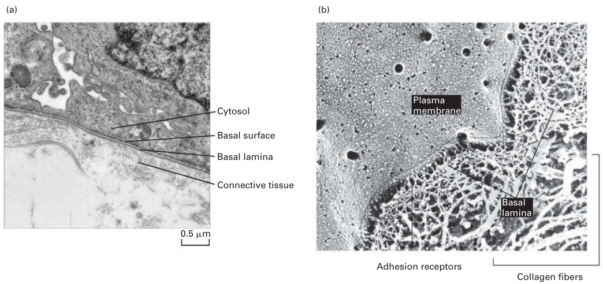
| Cytosol | 胞质溶胶 |
| Basal surface | 基底面 |
| Basal lamina | 基板 |
| Connective tissue | 结缔组织 |
| Plasma membrane | 质膜 |
| Adhesion receptors | 黏附受体 |
| Collagen fibers | 胶原纤维 |
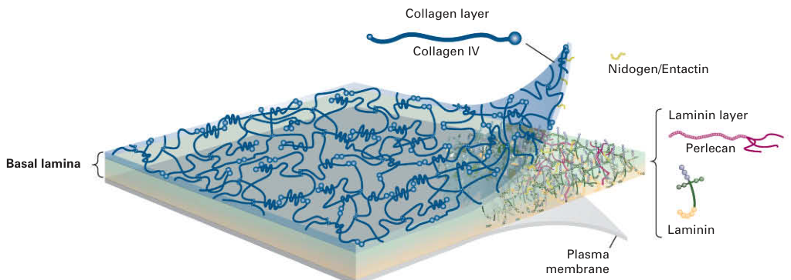
| Plasma membrane | 质膜 |
| Collagen layer | 胶原层 |
| Collagen IV | IV型胶原蛋白 |
| Basal lamina | 基板 |
| Laminin layer | 层粘连蛋白层 |
| Laminin | 层粘连蛋白 |
| Nidogen/Entactin | nidogen/entactin |
| Perlecan | perlecan |
其他ECM分子，例如进化上古老的糖蛋白家族fibulin的成员，可被纳入不同的基板，这取决于组织以及该基板特定的功能需求。
如图20-1所示，基板的一侧通过黏附受体与细胞相连，这些受体包括整合素，它们位于半桥粒中，结合基板中的层粘连蛋白。基板的另一侧由一层包埋在富含蛋白聚糖基质中的胶原纤维锚定到相邻的结缔组织。在复层鳞状上皮（如皮肤；见图20-10d）中，这种连接由VII型胶原蛋白的锚定原纤维介导。基板和锚定胶原原纤维共同形成称为基膜的结构。
层粘连蛋白，一种多黏附基质蛋白，帮助交联基板的组分
层粘连蛋白是基板中主要的多黏附基质蛋白，是一种由α、β和γ链组成的异源三聚体蛋白。脊椎动物中至少有16种层粘连蛋白同工型由5种α链、3种β链和3种γ链组装而成，每条链的编号反映链的组成：层粘连蛋白-111（α1β1γ1）或层粘连蛋白-511（α5β1γ1）。每种层粘连蛋白同工型都表现出独特的组织特异性和发育阶段特异性表达模式。如图20-24所示，许多层粘连蛋白是大型的十字形蛋白（分子量约820,000），不过有些呈Y形或杆状。每个亚基N端的球状结构域彼此结合，从而介导层粘连蛋白自组装成网架结构。层粘连蛋白α亚基C端的五个球状LG结构域介导对细胞表面层粘连蛋白受体的Ca2+依赖性结合，这些受体包括某些整合素（见表20-4）以及硫酸化糖脂、syndecan和肌营养不良蛋白聚糖，这些将在20.4节进一步讨论。其中一些相互作用是通过受体上带负电荷的糖类实现的。LG结构域见于多种其他蛋白质，可介导与类固醇、蛋白质以及糖类的结合。层粘连蛋白是整合素在基板中的主要配体。
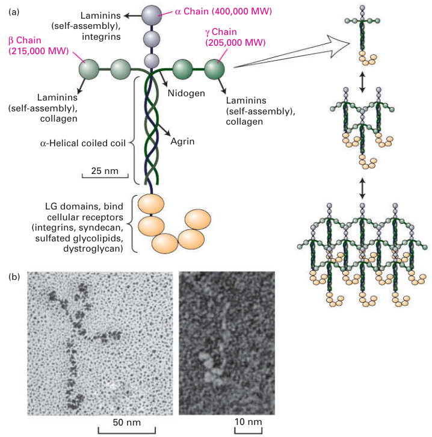
| α chain | α链 |
| β chain | β链 |
| γ chain | γ链 |
| coiled coil | 卷曲螺旋 |
| LG domains | LG结构域 |
| integrins | 整合素 |
| syndecan | syndecan |
| sulfated glycolipids | 硫酸化糖脂 |
| dystroglycan | 肌营养不良蛋白聚糖 |
| Laminins (self-assembly) | 层粘连蛋白（自组装） |
| collagen | 胶原蛋白 |
| nidogen | nidogen |
| agrin | agrin |
片层形成的IV型胶原蛋白是基板的主要结构组分
IV型胶原蛋白与层粘连蛋白一起，是所有基板的主要结构组分，并能结合黏附受体，包括某些整合素。胶原蛋白IV是人体中至少28种参与各种组织不同ECM形成的胶原蛋白之一（表20-5）。人类蛋白质组中还有至少20种额外的胶原样蛋白（如宿主防御胶原蛋白）。尽管胶原蛋白同工型在某些结构特征和组织分布上有所不同，但所有胶原蛋白都是由三条多肽构成的三聚体蛋白，每条多肽由人类至少43个基因之一编码，通常称为胶原蛋白α链。一个胶原蛋白分子中的三条α链可以相同（形成同源三聚体）或不同（形成异源三聚体）。三股胶原蛋白分子的全部或部分可以相互缠绕，形成一种特殊的三股螺旋称为胶原三股螺旋。当存在一个以上三股螺旋区段时，这些区段由蛋白质的非螺旋区连接，我们很快就会在IV型胶原蛋白中看到这一点。在一个螺旋区段内，三条α链各自扭成左手螺旋，然后三条链相互缠绕，形成右手三股螺旋（图20-25）。
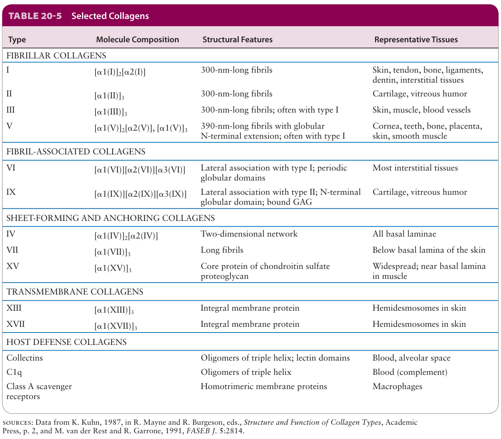
| FIBRILLAR COLLAGENS | 纤维状胶原蛋白 |
| FIBRIL-ASSOCIATED COLLAGENS | 纤维相关胶原蛋白 |
| SHEET-FORMING AND ANCHORING COLLAGENS | 片层形成型与锚定型胶原蛋白 |
| TRANSMEMBRANE COLLAGENS | 跨膜胶原蛋白 |
| HOST DEFENSE COLLAGENS | 宿主防御胶原蛋白 |
| Collectins | 胶原凝集素 |
| C1q | C1q |
| Class A scavenger receptors | A类清道夫受体 |
| Hemidesmosomes in skin | 皮肤中的半桥粒 |
胶原三股螺旋之所以能够形成，是因为α链中三种氨基酸异常丰富：甘氨酸、脯氨酸以及脯氨酸的一种修饰形式——羟脯氨酸（见图2-15）。它们构成特征性的重复序列基序Gly-X-Y，其中X和Y可以是任何氨基酸，但X位常常是脯氨酸，Y位常常是羟脯氨酸，较少情况下是赖氨酸和羟赖氨酸。甘氨酸必不可少，因为其小的侧链（一个氢原子）是唯一能容纳进三股螺旋拥挤中心的侧链（见图20-25b）。氢键有助于将三条链维系在一起。虽然刚性的肽酰-脯氨酸和肽酰-羟脯氨酸连接与经典单链α螺旋的形成不相容，但它们能稳定独特的胶原三股螺旋。位于Y位的羟脯氨酸中的羟基有助于使其环保持一种能稳定三股螺旋的构象。
针对胶原蛋白IV和其他类型胶原蛋白（其他胶原蛋白将在下一节讨论）存在几种不同的细胞表面受体。这些细胞表面受体包括某些整合素、discoidin结构域受体1和2（它们是酪氨酸激酶受体）、糖蛋白VI（位于血小板上）、白细胞相关免疫球蛋白样受体-1、甘露糖受体家族成员，以及蛋白质CD44的一种修饰形式。它们在帮助组装ECM以及将细胞活动与ECM整合方面可发挥关键作用。
每种胶原蛋白同工型的独特性质主要取决于以下方面的差异：（1）胶原三股螺旋区段的数量和长度；（2）位于三股螺旋区段两侧或将其隔断、并折叠成其他类型三维结构的区段；以及（3）α链的共价修饰（如羟化、糖基化、氧化、交联）。例如，IV型胶原蛋白中的链被称为IVα链。哺乳动物表达六种同源的IVα链，它们组装成三种性质不同的异源三聚体IV型胶原蛋白。不过，所有IV型胶原蛋白亚型都形成一条长400 nm的三股螺旋（图20-26），该螺旋被非螺旋区段隔断约24次，两侧分别是链C端的一个大球状结构域和N端的一个较小球状结构域。非螺旋区赋予分子柔性。通过侧面缔合以及涉及N端和C端球状结构域的相互作用，IV型胶原蛋白分子组装成分支的、不规则的二维纤维网络，形成一个网格，基板正是连同层粘连蛋白网格一起构建在该网格之上（见图20-23和图20-26）。
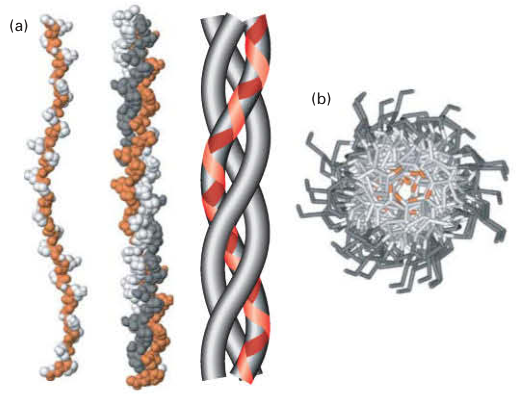
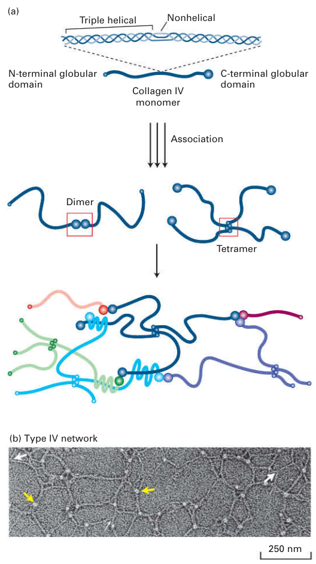
| Triple helical | 三股螺旋 |
| N-terminal globular domain | N端球状结构域 |
| C-terminal globular domain | C端球状结构域 |
| Collagen IV monomer | IV型胶原蛋白单体 |
| Association | 缔合 |
| Dimer | 二聚体 |
| Tetramer | 四聚体 |
| Nonhelical | 非螺旋区 |
| Type IV network | IV型网络 |
在肾脏中，一层称为肾小球基膜的双层基板将衬在尿液腔一侧的上皮与衬在周围充满血液的毛细血管一侧的内皮分隔开。该结构负责血液的超滤和初始尿液形成，其缺陷可导致肾衰竭。例如，改变某些IVα链C端球状结构域的突变与进行性肾衰竭以及感音神经性耳聋和眼部异常相关，这种病症称为阿尔波特综合征。在古德帕斯彻综合征这一相对罕见的自身免疫病中，抗体结合肾小球基膜和肺中IV型胶原蛋白的α3链。这种结合引发免疫反应，造成细胞损伤，导致进行性肾衰竭和肺出血。■
perlecan，一种蛋白聚糖，交联基板组分与细胞表面受体
perlecan是基板中主要的分泌型蛋白聚糖，由一个大型多结构域核心蛋白（约470 kDa）组成，其上共价连接着多糖。核心蛋白由五种不同结构域的多个重复组成，包括层粘连蛋白样LG结构域（3个拷贝）、EGF样结构域（12个拷贝）和Ig结构域（22个拷贝）。在电镜下观察时，众多球状重复使其呈现出约200 nm长的珍珠串外观，perlecan之名即由此而来。perlecan含有三种共价多糖链：N连接链（见第14章）、O连接链和糖胺聚糖（GAG）（O连接糖和GAG将在20.4节进一步讨论）。GAG是重复二糖构成的长线性聚合物。含有共价连接GAG链的糖蛋白称为蛋白聚糖。perlecan的蛋白质组分和GAG组分都有助于它整合进基板并决定基板的结构与功能。由于其多个结构域和多糖链具有不同的结合特性，perlecan能结合数十种其他分子，包括其他ECM组分（如层粘连蛋白、nidogen/entactin）、细胞表面受体和多肽生长因子。同时结合这些分子导致perlecan介导的交联。perlecan可见于基板中以及非基板的ECM中。黏附受体肌营养不良蛋白聚糖可直接通过perlecan的LG结构域结合perlecan，也可通过结合层粘连蛋白间接结合。在人类中，perlecan基因突变可导致侏儒症或肌肉异常，显然是由于控制肌肉放电的神经肌肉接头功能异常所致。
- 基质体是构成ECM本身的蛋白质以及可共价修饰（如化学交联、磷酸化、切割）ECM的相关蛋白质的总合。
- 基板是一种由ECM分子构成的薄网架，将大多数上皮和其他成组织的细胞群与相邻结缔组织分隔开。基板与紧邻的胶原网络共同形成称为基膜的结构。
- 所有基板中都存在四种ECM蛋白（见图20-23）：层粘连蛋白（一种多黏附基质蛋白）、IV型胶原蛋白、perlecan（一种蛋白聚糖）和nidogen/entactin。
- 整合素等黏附受体将细胞锚定到基板，而基板又与其他ECM组分相连（见图20-1）。基板中的层粘连蛋白是α6β4整合素的主要配体（见表20-4）。
- 层粘连蛋白和其他多黏附基质蛋白是多结构域分子，可结合多种黏附受体和ECM组分。
- IV型胶原蛋白这种大型柔性分子可通过首尾相互作用和侧面相互作用形成网架状支架，其他ECM组分和黏附受体可结合于其上（见图20-23和图20-26）。
- IV型胶原蛋白是胶原蛋白家族的一员，该家族的特征是存在重复的三肽序列Gly-X-Y，它产生胶原三股螺旋结构（见图20-25）。不同胶原蛋白的区别在于其α链的长度和化学修饰，以及是否存在隔断或位于其三股螺旋区两侧的区段。
- perlecan是一种主要存在于基板中的大型多结构域分泌型蛋白聚糖，可结合许多ECM组分和黏附受体。蛋白聚糖由膜结合或分泌的核心蛋白与一条或多条称为糖胺聚糖（GAG）的特化多糖链共价连接而成。
20.4 细胞外基质II：结缔组织
结缔组织（如肌腱和软骨）与其他实体组织的不同之处在于，其大部分体积由细胞外基质（ECM）而非细胞构成。这种ECM中充满了不溶性蛋白纤维。结缔组织中的ECM有几个关键组分，其中一些也存在于其他类型的组织中：
● 胶原蛋白，一种三聚体分子，常成束聚集成纤维（纤维状胶原蛋白）
● 糖胺聚糖（GAG），特殊的线性多糖链，由特定的重复二糖组成，可以高度水化，并赋予多样的结合特性和物理性质（例如抗压缩性）
● 蛋白聚糖，含有共价结合的一条或多条GAG链的糖蛋白
● 多黏附蛋白，大型多结构域蛋白，通常由少数几种独特结构域的许多拷贝（"重复序列"）组成，可结合并交联多种黏附受体和ECM组分
● 弹性蛋白，构成弹性纤维无定形核心的一种蛋白质胶原蛋白是结缔组织中最丰富的纤维状蛋白。类橡胶的弹性蛋白纤维可以拉伸和回弹，也存在于可变形的部位（如皮肤、肌腱、心脏）。纤连蛋白是一类多黏附基质蛋白，在大多数结缔组织的ECM中形成自身独特的原纤维。尽管结缔组织中存在多种类型的细胞，但各种ECM组分主要由一类称为成纤维细胞的细胞产生。本节中，我们探讨结缔组织中各种ECM组分的结构与功能，并了解ECM如何被多种特化的蛋白酶降解和重塑。
纤维状胶原蛋白是结缔组织ECM中的主要纤维蛋白
体内约80–90%的胶原蛋白由纤维状胶原蛋白（I、II和III型）组成，主要位于结缔组织中（见表20-5）。由于其在富含肌腱的组织（如鼠尾）中含量丰富，I型胶原蛋白易于分离，也是最早被表征的胶原蛋白。其基本结构单元是一条长（300 nm）、细（直径1.5 nm）的三股螺旋（见图20-25），由两条α1(I)链和一条α2(I)链组成，每条链长1050个氨基酸。这些三股链分子紧密堆积并相互缠绕，形成微纤维，微纤维进一步缔合成称为胶原原纤维的高级聚合物，原纤维又常聚集成更大的束，称为胶原纤维（图20-27）。
含量较少但仍然重要的胶原蛋白类别包括：原纤维相关胶原蛋白，它们将纤维状胶原蛋白彼此连接或与其他ECM组分相连；成片和锚定胶原蛋白，它们在基板（IV型）中形成二维网络，并将皮肤中的基板与下方的结缔组织相连（VII型）；跨膜胶原蛋白，它们作为黏附受体发挥作用；以及宿主防御胶原蛋白，它们帮助机体识别和清除病原体。有趣的是，若干胶原蛋白（如IX、XVIII和XV型）同时也是带有共价连接GAG的蛋白聚糖（见表20-5）。
纤维状胶原蛋白在细胞外被分泌并组装成原纤维
纤维状胶原蛋白是分泌蛋白，主要由ECM中的成纤维细胞产生。胶原蛋白的生物合成与分泌遵循分泌蛋白的常规途径，第13章和第14章对此有详细描述。胶原蛋白α链由附着在内质网（ER）上的核糖体合成为更长的前体，称为前α链。前α链经历一系列共价修饰，并在从细胞中释放之前折叠成三股螺旋的前胶原分子（见图20-27）。
前胶原从细胞分泌后，细胞外的肽酶切除N端和C端前肽。所得分子由于含有长段特征性的胶原重复序列基序Gly-X-Y，因而几乎完全由三股螺旋组成，它们侧向缔合形成直径50–200 nm的原纤维。在原纤维中，相邻的胶原蛋白分子彼此错位67 nm，约为其长度的四分之一。这种交错排列产生条纹效应，在胶原原纤维的光镜和电镜图像中均可见到（见图20-27插图）。纤维状胶原蛋白的独特性质主要归因于原纤维的形成。
纤维状胶原蛋白α链两端不由重复序列基序Gly-X-Y组成、因而不呈三股螺旋的短片段，在胶原原纤维的形成中尤为重要。这些片段中的赖氨酸和羟赖氨酸侧链被细胞外的赖氨酰氧化酶共价修饰，在侧链末端的氨基处形成醛基。这些反应性醛基与相邻分子中的赖氨酸、羟赖氨酸和组氨酸残基形成共价交联。交联稳定了胶原蛋白分子的并排堆积，并产生非常坚固的原纤维。末端前肽的切除和共价交联都发生在细胞外空间，以防止在细胞内组装出大的原纤维，那可能是灾难性的。
前α链的翻译后修饰对于成熟胶原蛋白分子的形成及其组装成原纤维至关重要。这些修饰的缺陷会造成严重后果，古代水手常常有此经历。例如，抗坏血酸（维生素C）
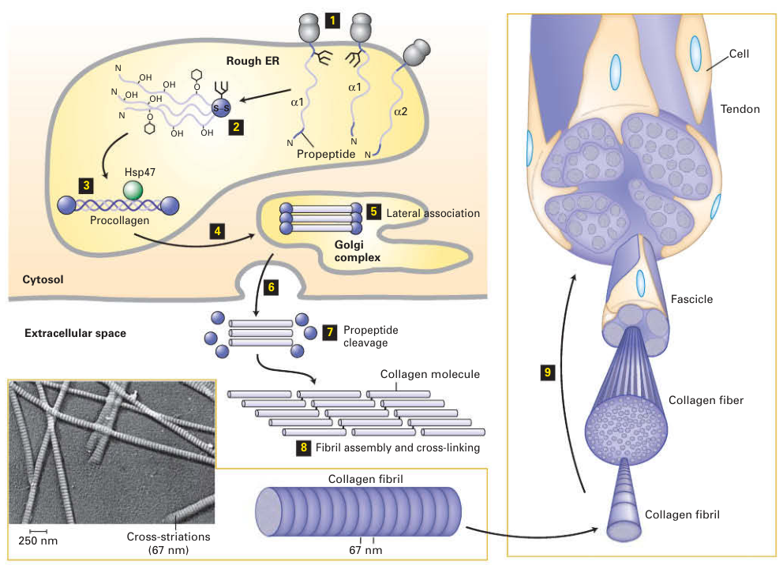
| Cytosol | 胞质溶胶 |
| Golgi complex | 高尔基复合体 |
| Rough ER | 粗面内质网 |
| Collagen fibril | 胶原原纤维 |
| Collagen fiber | 胶原纤维 |
| Fascicle | 纤维束 |
| Tendon | 肌腱 |
| Fibril assembly and cross-linking | 原纤维组装与交联 |
| Propeptide cleavage | 前肽切除 |
| Lateral association | 侧向缔合 |
| Procollagen | 前胶原 |
| Hsp47 | Hsp47 |
| Collagen molecule | 胶原蛋白分子 |
| Extracellular space | 细胞外空间 |
| Cross-striations | 横纹 |
是羟化酶的必需辅因子，这些羟化酶负责向前α链中的脯氨酸和赖氨酸残基添加羟基。在缺乏抗坏血酸的细胞中，如同患坏血病时那样，前α链的羟化程度不足以在正常体温下形成稳定的三股螺旋前胶原，而且所形成的前胶原无法组装成正常的原纤维。没有胶原蛋白的结构支撑，血管、肌腱和皮肤会变得脆弱。饮食中的新鲜水果可以提供足够的维生素C，以支持正常胶原蛋白的形成。历史上，英国水手被配给酸橙以预防坏血病，因此他们被称为"limeys"。赖氨酰羟化酶基因的突变也可引起结缔组织缺陷。■
I型和II型胶原蛋白与非纤维状胶原蛋白缔合形成多样的结构
各种胶原蛋白在所形成纤维的结构以及这些纤维组织成网络的方式上有所不同。在结缔组织中发现的优势胶原蛋白类型中，I型胶原蛋白形成长纤维，而II型胶原蛋白的网络则更呈网状。例如在肌腱中，长的I型胶原纤维将肌肉连接到骨骼，必须承受巨大的力。由于I型胶原纤维具有很大的抗张强度，肌腱通常可以被拉伸而不断裂。事实上，就单位重量而言，I型胶原蛋白比钢还坚固。两种在数量上次要的纤维状胶原蛋白，即V型和XI型，与I型胶原蛋白共同组装成纤维，从而调节纤维的结构和性质。例如，掺入V型胶原蛋白会导致纤维直径变小。
I型胶原原纤维还被用作骨构建中的增强杆。骨骼和牙齿坚硬而牢固，因为它们含有大量磷酸钙石（dahllite），一种含钙和磷酸盐的结晶矿物。大多数骨骼约70%是矿物质，30%是蛋白质，其中绝大多数是I型胶原蛋白。骨骼的形成是某些细胞（软骨细胞和成骨细胞）分泌胶原原纤维，随后通过沉积小的磷酸钙石晶体而发生矿化的结果。
在许多结缔组织中，尤其是骨骼肌中，蛋白聚糖和一种称为VI型胶原蛋白的原纤维相关胶原蛋白非共价结合在I型原纤维的侧面，并可能将原纤维结合在一起形成更粗的胶原纤维（图20-28a）。VI型胶原蛋白的特别之处在于，该分子由一条相对较短的三股螺旋构成，两端各有一个球状结构域。两个VI型单体的侧向缔合产生一个"反平行"二聚体。这些二聚体通过它们的球状结构域进行首尾缔合，形成VI型"微纤维"。这些微纤维呈串珠状外观，约60 nm长的三股螺旋区段被40 nm长的球状结构域隔开。
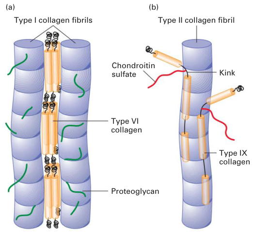
| Type I collagen fibrils | I型胶原原纤维 |
| Type II collagen fibril | II型胶原原纤维 |
| Type VI collagen | VI型胶原蛋白 |
| Type IX collagen | IX型胶原蛋白 |
| Kink | 扭结 |
| Proteoglycan | 蛋白聚糖 |
| Chondroitin sulfate | 硫酸软骨素 |
II型胶原蛋白是软骨中的主要胶原蛋白，其原纤维直径比I型原纤维小，并随机取向于黏稠的蛋白聚糖基质中。刚性的胶原原纤维赋予基质强度，使其能够抵抗大的形变。II型原纤维通过IX型胶原蛋白（另一种原纤维相关胶原蛋白）与基质蛋白聚糖交联。IX型胶原蛋白及若干相关类型具有两三个三股螺旋区段，由柔性扭结连接，并有一个球状N端区段（图20-28b）。IX型胶原蛋白的球状N端区段从II型原纤维上伸出于其某一螺旋区段的末端，有时连接到IX型链之一上的硫酸软骨素GAG链（硫酸软骨素见下文）也是如此。这些突出的非螺旋结构被认为将II型原纤维锚定到蛋白聚糖及基质的其他组分上。IX型及相关胶原蛋白的间断三股螺旋结构使它们无法组装成原纤维，不过它们可以与其他类型胶原蛋白形成的原纤维缔合，并与之形成共价交联。
影响I型胶原蛋白及其相关蛋白的突变会引起多种人类疾病。编码I型胶原蛋白α1(I)或α2(I)链的基因中的某些突变可导致成骨不全症，即脆骨病。由于胶原蛋白α链中每隔三个位置必须是一个甘氨酸，三股螺旋才能形成（见图20-25），因此甘氨酸突变为几乎任何其他氨基酸都是有害的，会导致螺旋形成不良和不稳定。胶原蛋白分子三条α链中只要有一条有缺陷，就足以破坏整个分子三股螺旋的结构和功能。α1(I)基因或α2(I)基因（两者均位于常染色体上）中任一基因的单个拷贝（等位基因）发生突变即可引起该病。因此它通常表现为常染色体显性遗传（见第6章）。
VI型胶原蛋白基因突变导致肌肉组织中原纤维相关胶原蛋白缺失或功能异常，会引起显性或隐性先天性肌营养不良，表现为全身性肌无力、呼吸功能不全、肌肉萎缩以及与肌肉相关的关节异常。VI型胶原蛋白病还报道有皮肤异常。■
蛋白聚糖及其组成性GAG在ECM中发挥多种作用
正如我们在基板中的perlecan所见，蛋白聚糖在细胞-ECM黏附中发挥重要作用。蛋白聚糖是分泌型或细胞表面糖蛋白的一个子集，含有共价连接的、称为糖胺聚糖（GAG）的特殊多糖链。GAG是特定重复二糖组成的长线性聚合物。通常其中一个糖是糖醛酸（D-葡萄糖醛酸或L-艾杜糖醛酸）或D-半乳糖；另一个糖是N-乙酰葡糖胺或N-乙酰半乳糖胺（图20-29）。其中一个或两个糖含有至少一个阴离子基团（羧基或硫酸基）。因此每条GAG链带有许多负电荷。根据重复二糖单元的性质，GAG被分为几个主要类型：硫酸乙酰肝素、硫酸软骨素、硫酸皮肤素、硫酸角质素和透明质酸（图20-29）。硫酸乙酰肝素的一种高度硫酸化形式称为肝素，主要由肥大细胞产生，在过敏反应中起关键作用。由于其能够激活一种称为抗凝血酶III的天然凝血抑制剂，它在医学上也被用作抗凝血药物。
除下文讨论的透明质酸外，所有主要的GAG在自然界中都作为蛋白聚糖的组分存在。与其他分泌型和跨膜糖蛋白一样，蛋白聚糖核心蛋白在内质网中合成，GAG链在高尔基复合体中组装并共价连接到这些核心蛋白上。要生成硫酸乙酰肝素或硫酸软骨素链，首先将一个三糖"连接区"连接到核心蛋白中某些丝氨酸残基的羟基侧链上；因此这些GAG是O连接寡糖（图20-30）。相比之下，添加硫酸角质素链的连接区是连接在天冬酰胺残基上的寡糖链；这类N连接寡糖存在于许多糖蛋白中（见第14章），但只有一部分携带GAG链。所有GAG链都通过交替添加糖单体而延伸，形成特定GAG特征性的二糖重复序列；这些链随后常通过硫酸等小分子的共价连接而被修饰。决定哪些蛋白被GAG修饰、添加什么二糖序列、哪些位点被硫酸化以及GAG链长度的机制尚不清楚。所有蛋白聚糖中多糖与蛋白质的比例都远高于大多数其他糖蛋白。
GAG链修饰的功能 与蛋白质中氨基酸的序列相似，GAG链中糖残基的排列以及这些链中特定糖的修饰，可以决定它们的功能以及含有它们的蛋白聚糖的功能。例如，硫酸乙酰肝素蛋白聚糖的GAG链中某些修饰糖的组合可以控制生长因子与某些受体的结合，或控制血液凝固级联中蛋白质的活性。
过去，蛋白聚糖的化学和结构复杂性对分析和理解它们的结构及其众多不同的功能构成了令人生畏的障碍。近年来，采用经典和最新生化技术、质谱以及遗传学的研究人员已开始阐明这些普遍存在的ECM分子的详细结构和功能。正在进行的研究结果表明，是含常见修饰的糖残基序列集合，而非单一独特的序列，决定了GAG的不同功能。一个典型的例子是一组五残基（五糖）序列，存在于一部分肝素GAG中，控制抗凝血酶III（ATIII）的活性，ATIII是关键的凝血蛋白酶凝血酶的抑制剂。当肝素中的这些五糖序列在两个特定位点被硫酸化时（图20-31），肝素便可激活ATIII，从而抑制血凝块形成。活性五糖中还可以各种组合形式存在其他几种硫酸基，但它们对肝素的抗凝血活性并非必需。生成一组相似活性序列而非单一独特序列的理由尚不清楚。
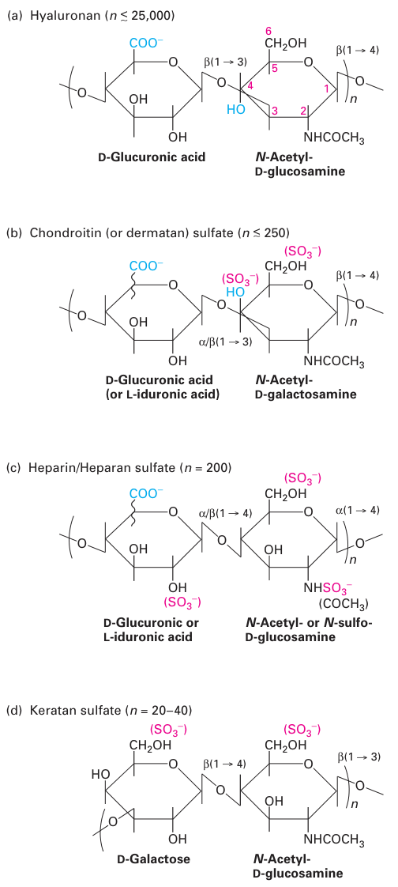
| Hyaluronan | 透明质酸 |
| D-Glucuronic acid | D-葡萄糖醛酸 |
| L-Iduronic acid | L-艾杜糖醛酸 |
| N-Acetyl-D-glucosamine | N-乙酰葡糖胺 |
| N-Acetyl-D-galactosamine | N-乙酰半乳糖胺 |
| D-Galactose | D-半乳糖 |
| Chondroitin (or dermatan) sulfate | 硫酸软骨素（或硫酸皮肤素） |
| Keratan sulfate | 硫酸角质素 |
| Heparin/Heparan sulfate | 肝素/硫酸乙酰肝素 |
蛋白聚糖的多样性 蛋白聚糖构成了一类极其多样的分子，在所有动物组织的ECM中都很丰富，也在细胞表面表达。例如，在五大类硫酸乙酰肝素蛋白聚糖中，有三种位于ECM（perlecan、agrin和XVIII型胶原蛋白），两种是细胞表面蛋白。后者包括整合膜蛋白（syndecan）和GPI锚定蛋白（glypican）；这两类细胞表面蛋白聚糖中的GAG链都延伸到细胞外空间。蛋白聚糖核心蛋白的序列和长度差异很大，所连接GAG链的数目从只有几条到100条以上不等。此外，一个核心蛋白常常连接两种不同类型的GAG链，生成"杂合"蛋白聚糖。
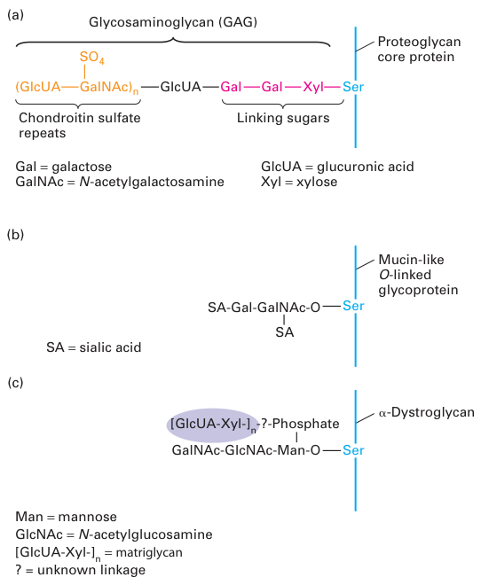
| Glycosaminoglycan (GAG) | 糖胺聚糖（GAG） |
| Proteoglycan core protein | 蛋白聚糖核心蛋白 |
| Linking sugars | 连接糖 |
| Chondroitin sulfate repeats | 硫酸软骨素重复序列 |
| Mucin-like O-linked glycoprotein | 黏蛋白样O连接糖蛋白 |
| Glucuronic acid (GlcUA) | 葡萄糖醛酸（GlcUA） |
| Xylose (Xyl) | 木糖（Xyl） |
| Galactose (Gal) | 半乳糖（Gal） |
| N-acetylgalactosamine (GalNAc) | N-乙酰半乳糖胺（GalNAc） |
| Mannose (Man) | 甘露糖（Man） |
| N-acetylglucosamine (GlcNAc) | N-乙酰葡糖胺（GlcNAc） |
| Sialic acid (SA) | 唾液酸（SA） |
| matriglycan | matriglycan |
| α-Dystroglycan | α-肌营养不良蛋白聚糖 |
基板中的蛋白聚糖perlecan主要是一种带三到四条GAG链的硫酸乙酰肝素蛋白聚糖，不过它有时也可以有一条结合的硫酸软骨素链。蛋白聚糖的额外多样性还因为，连接在其它方面相同的核心蛋白上的GAG链的数目、组成和序列可能有很大差异。在果蝇、秀丽隐杆线虫和小鼠中通过实验产生并分析蛋白聚糖生成缺陷的突变体，清楚地表明蛋白聚糖在发育中起关键作用；例如，作为多种信号通路的参与者（TGF-β和Wnt通路的例子见第16章）。
syndecan是上皮细胞和非上皮细胞表达的细胞表面蛋白聚糖，它们与胶原蛋白和纤连蛋白等多黏附基质蛋白结合，将细胞锚定到ECM。与许多整合膜蛋白一样，syndecan的胞质结构域与肌动蛋白细胞骨架相互作用，在某些情况下还与细胞内的调节分子相互作用。此外，syndecan等细胞表面蛋白聚糖结合许多蛋白类生长因子和其他外部信号分子，从而有助于调节细胞代谢和功能。例如，大脑下丘脑区域的syndecan响应食物剥夺而调节进食行为。它们是通过参与抗饱腹肽与细胞表面受体的结合来做到这一点的，这些抗饱腹肽有助于控制进食行为。在进食状态下，装饰有硫酸乙酰肝素GAG链的syndecan胞外结构域通过蛋白酶解从细胞表面释放，从而抑制抗饱腹肽的活性和进食行为。在脑下丘脑区域和其他组织中被改造为过表达syndecan-1基因的小鼠中，抗饱腹肽对进食的正常控制被破坏，动物过度进食并变得肥胖。
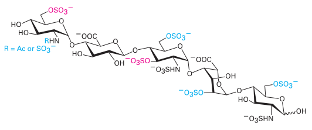
透明质酸抵抗压缩、促进细胞迁移并赋予软骨凝胶样性质
透明质酸，又称hyaluronic acid（HA）或hyaluronate，是一种非硫酸化GAG（见图20-29a），由一种称为HA合酶的质膜结合酶合成，并在合成的同时直接分泌到细胞外空间。（植物细胞制造ECM组分纤维素时采用类似的方式。）透明质酸是包围迁移和增殖细胞的ECM的主要组分，尤其在胚胎组织中。此外，它构成许多ECM（特别是软骨）中复杂蛋白聚糖聚集体的骨架。由于其非凡的物理性质，透明质酸赋予关节等许多类型的结缔组织以刚度、回弹性以及润滑性。
透明质酸分子的长度从几个二糖重复到约25,000个二糖重复不等。肘部等关节中典型的透明质酸有10,000个重复，总质量4 × 106 Da，长度10 μm（约相当于一个小细胞的直径）。由于糖之间的β糖苷键以及广泛的链内氢键，透明质酸分子的各个区段折叠成杆状构象。以规则间隔向外突出的带负电羧基之间的相互排斥也促成了这些局部刚性的结构。然而总体而言，透明质酸并不像纤维状胶原蛋白那样是长的刚性杆；相反，它在溶液中非常柔韧，弯曲扭转为多种构象，形成无规卷曲。
由于其表面有大量阴离子残基，典型的透明质酸分子能结合大量水，表现为一个直径约500 nm的大水化球体。随着透明质酸浓度的增加，长链开始缠结，形成黏稠的凝胶。即使在低浓度下，透明质酸也形成水化凝胶；当被置于受限空间（如两个细胞之间）时，长的透明质酸分子倾向于向外推挤。这种向外的推挤产生了细胞外空间内的膨胀，即膨压。此外，透明质酸表面的羧基（COO−）与阳离子结合，增加了离子浓度，从而提高凝胶的渗透压。结果，大量水被摄取，促成了膨压。这些膨胀力赋予结缔组织抵抗压缩力的能力，而胶原纤维则相反，它们最擅长抵抗拉伸力。其他高电荷的GAG链也同样水化。
透明质酸通过多种黏附受体结合在许多迁移细胞的表面，例如称为CD44的受体，它含有透明质酸结合结构域，每个结构域都具有相似的三维构象。由于其疏松、水化、多孔的性质，结合在细胞上的透明质酸"外衣"似乎使细胞彼此分开，赋予它们自由移动和增殖的能力。细胞运动的停止和细胞-细胞附着的启动，常常与透明质酸减少、透明质酸受体减少以及降解基质中透明质酸的细胞外酶透明质酸酶增加相关。透明质酸的这些变化在促进分化的众多细胞迁移过程中，以及在排卵后哺乳动物卵细胞从周围细胞中释放的过程中，尤为重要。
软骨中占优势的蛋白聚糖称为aggrecan，它与透明质酸组装成非常大的聚集体，体现了蛋白聚糖有时形成的复杂结构。这种蛋白聚糖聚集体的骨架是一条长的透明质酸分子，多个aggrecan分子紧密但非共价地结合在其上（图20-32）。单个透明质酸-aggrecan聚集体是已知最大的大分子复合物之一，可长达4 μm以上，体积大于一个细菌细胞。这些聚集体赋予软骨独特的凝胶样性质和抗形变能力，这对于在承重关节中分散载荷至关重要。
aggrecan核心蛋白（约250,000 MW）有一个N端球状结构域，以高亲和力结合透明质酸内一段特定的十糖序列。这一特定序列是通过对透明质酸链中某些重复二糖的共价修饰而产生的。aggrecan与透明质酸之间的相互作用由一个连接蛋白促进，该蛋白同时结合aggrecan核心蛋白和透明质酸（图20-32b）。aggrecan和连接蛋白共同拥有一个约100个氨基酸长的"连接"结构域，该结构域存在于软骨和非软骨组织中众多ECM和细胞表面透明质酸结合蛋白中。这些蛋白几乎肯定是在进化过程中由编码该结构域的单个祖先基因演化而来的。
纤连蛋白连接细胞与ECM，影响细胞形状、分化和运动
许多不同类型的细胞合成纤连蛋白，这是一种存在于所有脊椎动物中的丰富多黏附基质蛋白。纤连蛋白作为黏附分子的发现源于以下观察：它存在于正常成纤维细胞的表面，在实验室实验中这些细胞牢固地黏附于培养皿，但它不存在于致瘤性（即癌性）细胞的表面，后者黏附较弱。纤连蛋白的约20种同工型是通过可变剪接由单个基因产生的RNA转录本生成的（见图5-16）。纤连蛋白对于胚胎发生中许多细胞类型的迁移和分化至关重要。这些蛋白对伤口愈合也很重要，因为它们促进血液凝固并促进巨噬细胞和其他免疫系统细胞迁移到受影响的区域。
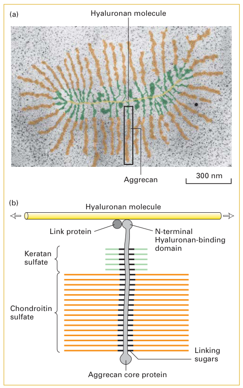
| Aggrecan | aggrecan |
| Hyaluronan molecule | 透明质酸分子 |
| Link protein | 连接蛋白 |
| Linking sugars | 连接糖 |
| Hyaluronan-binding domain | 透明质酸结合结构域 |
| Aggrecan core protein | aggrecan核心蛋白 |
| Keratan sulfate | 硫酸角质素 |
| Chondroitin sulfate | 硫酸软骨素 |
纤连蛋白通过与其他ECM组分（特别是纤维状胶原蛋白和硫酸乙酰肝素蛋白聚糖）以及整合素等黏附受体结合，帮助细胞附着到ECM上（见图20-2）。通过与黏附受体的相互作用，纤连蛋白影响细胞的形状和运动以及细胞骨架的组织。反过来，通过调节其与纤连蛋白及其他ECM组分之间由受体介导的附着，细胞可以塑造周围的ECM环境以满足自身需要。
纤连蛋白是由两条相似多肽组成的二聚体，两条链在其C端通过两个二硫键连接；每条链长约60–70 nm，厚2–3 nm。用少量蛋白酶对纤连蛋白进行部分消化并分析片段，结果表明每条链由若干具有不同配体结合特异性的功能区域组成（图20-33a）。每个区域又含有某些编码结构域的序列的多个拷贝，这些序列可分为三种类型之一。基于氨基酸序列的相似性，这些结构域被命名为纤连蛋白I、II和III型重复，尽管某一给定类型的任意两个重复序列并不完全相同。这些串联的重复使该分子呈现串珠状的外观。组成各区域的不同重复的组合，赋予纤连蛋白结合多个配体的能力。
纤连蛋白细胞结合区中某个III型重复介导与某些整合素的结合。用对应于该重复部分序列的合成肽进行的研究，鉴定出三肽序列Arg-Gly-Asp（称为RGD基序）是该重复内被这些整合素识别所需的最小序列。在一项研究中，测试了含和不含RGD基序的七肽介导大鼠肾细胞黏附到培养皿的能力。结果表明，含有RGD基序的七肽模拟了完整纤连蛋白刺激整合素介导黏附的能力，而缺少该序列的变异七肽则无效（图20-34）。
基于纤连蛋白和整合素两者的部分结构，已组装出纤连蛋白与整合素结合的三维模型。在整合素结合型纤连蛋白III型重复及其相邻III型结构域的高分辨率结构中，RGD基序位于一个从分子向外突出的环的顶端，所处位置便于与整合素结合（图20-33b）。虽然RGD基序是结合若干不同整合素所必需的，但其对整合素的亲和力远低于完整纤连蛋白或纤连蛋白中整个细胞结合区。因此，纤连蛋白中RGD基序附近的结构特征（例如相邻重复的部分，如协同区域；见图20-33b）以及其他含RGD的蛋白中的结构特征，必定增强了它们与某些整合素的结合。此外，由肝脏或成纤维细胞产生的简单可溶性二聚体形式的纤连蛋白，起初处于一种无功能的构象，与整合素结合很差，因为RGD基序不易接近。纤连蛋白吸附到胶原基质或基板上——或在实验上，吸附到塑料组织培养皿上——会导致构象变化，增强纤连蛋白与细胞结合的能力。这种构象变化可能增加了RGD基序对整合素结合的可及性。
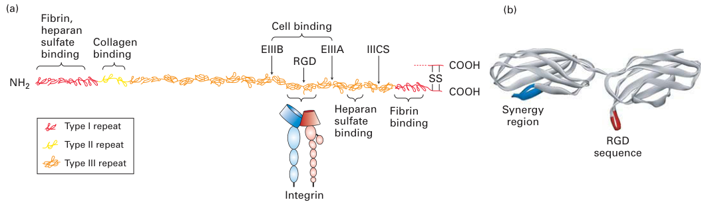
| EIIIA | EIIIA |
| EIIIB | EIIIB |
| IIICS | IIICS |
| Type I repeat | I型重复 |
| Type II repeat | II型重复 |
| Type III repeat | III型重复 |
| Cell binding | 细胞结合 |
| Collagen binding | 胶原蛋白结合 |
| Fibrin binding | 纤维蛋白结合 |
| Heparan sulfate binding | 硫酸乙酰肝素结合 |
| Integrin | 整合素 |
| Synergy region | 协同区域 |
| RGD sequence | RGD序列 |
显微技术和其他实验方法（例如生化结合实验）已证明整合素在将纤连蛋白及其他ECM组分交联到细胞骨架中的作用。例如，细胞内细胞骨架肌动蛋白丝与整合素的共定位可通过荧光显微镜观察到（图20-35a）。细胞表面整合素与ECM中纤连蛋白的结合，诱导一些整合素分子在质膜平面内进行依赖于肌动蛋白细胞骨架的运动。由此产生的机械张力——由于结合在同一个纤连蛋白二聚体上的不同整合素相对运动所致——拉伸纤连蛋白（见图20-9），纤连蛋白是一种机械感受器，并促进纤连蛋白自缔合成多聚体原纤维。
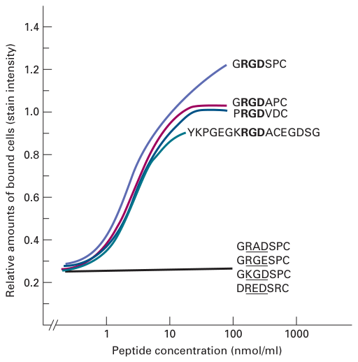
| Relative amounts of bound cells (stain intensity) | 结合的细胞相对量（染色强度） |
| Peptide concentration (nmol/ml) | 肽浓度（nmol/ml） |
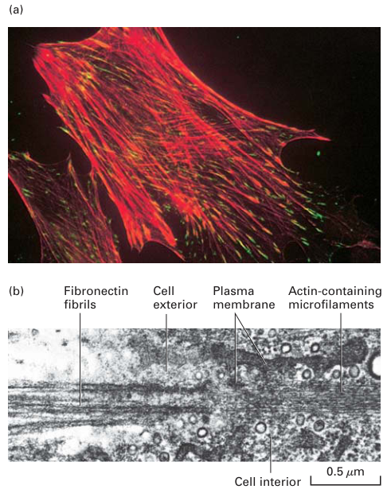
| Cell exterior | 细胞外侧 |
| Cell interior | 细胞内侧 |
| Plasma membrane | 质膜 |
| Fibronectin fibrils | 纤连蛋白原纤维 |
| Actin-containing microfilaments | 含肌动蛋白的微丝 |
展开并暴露纤连蛋白中功能性自缔合位点所需的力，远小于破坏纤连蛋白-整合素结合所需的力。因此，当细胞产生的机械力诱导原纤维形成时，纤连蛋白分子仍与整合素保持结合。实际上，整合素通过衔接蛋白将肌动蛋白细胞骨架产生的细胞内应力传递到细胞外的纤连蛋白（通过机械转导的由内向外信号转导）。逐渐地，最初形成的纤连蛋白原纤维通过共价交联成熟为高度稳定的基质组分。在一些电镜照片中，外侧的纤连蛋白原纤维似乎与细胞内的肌动蛋白纤维束排列成看似连续的一条线（图20-35b）。这些观察以及其他研究的结果，提供了分子层面定义明确的黏附受体在细胞内细胞骨架与ECM组分之间架起桥梁的第一个例子——这一现象现在已知是普遍存在的。
弹性纤维使许多组织能够反复拉伸和回弹
弹性纤维存在于多种经受机械应变或形变的组织的ECM中，例如呼吸时扩张和收缩的肺（图20-36a）；因心跳而搏动的血管，以及可伸展和收缩的皮肤和许多其他组织。弹性纤维使这些组织能够发生类似橡胶的可逆弹性拉伸和回弹。
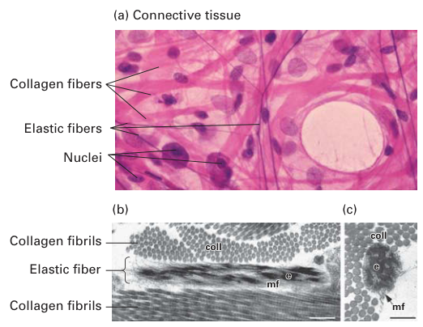
| Connective tissue | 结缔组织 |
| Collagen fibers | 胶原纤维 |
| Collagen fibrils | 胶原原纤维 |
| Elastic fibers | 弹性纤维 |
| Elastic fiber | 弹性纤维 |
| Nuclei | 细胞核 |
弹性纤维的主要组分（直径可为数百到数千纳米）是由弹性蛋白构成的不溶性无定形核心。弹性蛋白由单体原弹性蛋白分子的聚集体组成，这些分子通过类似胶原蛋白中所见的赖氨酰氧化酶介导的过程共价交联。富含脯氨酸和甘氨酸的重复疏水序列基序促成了原弹性蛋白自缔合、在应力下伸展以及拉伸后高效回弹的能力。弹性蛋白核心被一系列直径10–12 nm的微纤维包围，这些微纤维由fibrillin、fibulin等蛋白以及LTBP等相关蛋白组成（图20-36b）。微纤维充当弹性纤维核心组装的支架。眼中存在不含弹性蛋白的微纤维，它们在那里传递肌肉力以重塑晶状体实现聚焦，并可能为角膜提供结构支持。
与其他ECM组分类似，微纤维参与细胞信号转导。在分泌途径中，LTBP在共同分泌并掺入微纤维之前，结合转化生长因子β（TGF-β；见第16章）的无活性形式（事实上，LTBP是latent TGF-β binding protein（潜伏型TGF-β结合蛋白）的缩写）。由细胞表面整合素结合并牵拉LTBP/TGF-β复合物所介导的生物力学应力，或蛋白酶解切割，被认为是活性TGF-β从ECM释放并随后进行信号转导的直接原因（见图16-3）。
多种疾病（许多涉及骨骼和心血管异常）是编码弹性纤维结构蛋白或参与其正确组装的蛋白的基因发生突变的结果。例如，纤维蛋白原-1（fibrillin-1）基因的突变引起马方综合征，其多样的症状可包括骨骼过度生长、关节松弛、四肢和面部异常长，以及因主动脉和其他血管壁薄弱导致的心血管缺陷。曾有相当多的推测认为，亚伯拉罕·林肯总统异常高瘦的身材可能是马方综合征的结果。■
在哺乳动物中，大部分原弹性蛋白的合成发生在出生前后不久，即胎儿晚期和新生儿期。因此，体内大部分弹性蛋白必须非常耐久，能维持整个一生。弹性蛋白非凡的稳定性已用多种方法测定。使用放射性氨基酸给药的脉冲-追踪实验（见第3章）可用于测量动物体内弹性蛋白的寿命。在人类中，用于研究弹性蛋白长寿性的另外两种方法揭示，人肺中一个弹性蛋白分子的平均寿命约为70年！第一种方法利用了一种自然发生的现象：L-天冬氨酸（在蛋白质合成过程中被掺入）向D-天冬氨酸转化的缓慢自然速率。因此，通过化学分析确定其L-天冬氨酸随时间转化为D异构体的比例，再结合该蛋白所来源组织的年龄，便可估计长寿命蛋白的年龄。第二种方法是实验室所用经典脉冲-追踪实验的一种变体。由于20世纪50年代和60年代的核武器试验，14C被引入大气，进而进入食物链。这种环境14C被用作放射性"脉冲"，在本质上是一项脉冲-追踪实验，用以确定目标蛋白的稳定性。
金属蛋白酶重塑和降解细胞外基质
许多关键的生理过程，包括发育过程中的形态发生、细胞增殖和运动的控制、对损伤的应答，甚至生存，不仅需要ECM的产生，还需要其重塑或降解。由于ECM作为多细胞生物细胞外环境中的关键要素具有极大的重要性，ECM的重塑和降解必须受到精细调控。ECM的降解通常由锌依赖性ECM金属蛋白酶介导。鉴于ECM组分种类繁多，存在许多具有不同底物特异性和表达部位的此类金属蛋白酶并不令人意外。在许多情况下，它们的名称包含其底物的名称，例如称为胶原酶、明胶酶、弹性蛋白酶和aggrecan酶的金属蛋白酶。有些被分泌到细胞外液中，另一些则与细胞的质膜紧密结合，或以非共价结合的方式与膜紧密相连，或作为整合膜蛋白。许多最初合成为无活性的前体，必须经过特异性激活才能发挥作用。
根据酶的结构，ECM金属蛋白酶分为三个主要亚群：基质金属蛋白酶（MMP）（人类中有23种）、解整合素和金属蛋白酶（ADAM），以及带血小板反应蛋白基序的ADAM（ADAMTS）。这些蛋白酶既能降解ECM组分，也能降解黏附受体等非ECM组分。事实上，ADAM的一个关键功能是切断整合膜蛋白的胞外结构域。控制这些蛋白酶活性的一种机制是产生称为TIMP（金属蛋白酶组织抑制剂）和RECK（含Kazal基序的诱导逆转富含半胱氨酸蛋白）的蛋白抑制剂。其中一些抑制剂有它们自己的细胞表面受体，并具有独立于其抑制金属蛋白酶能力的功能。降解ECM的蛋白酶与多种疾病相关，其中最著名的是转移性（扩散性）癌症（见第24章）。
- 结缔组织（如肌腱和软骨）与其他实体组织的不同之处在于，其大部分体积由细胞外基质（ECM）而非细胞构成。
- 纤维状胶原蛋白（如I、II和III型）的合成始于细胞内，新合成的α链在内质网中经过化学修饰并组装成三股螺旋的前胶原。分泌后，前胶原分子被切割、侧向缔合，并共价交联成称为原纤维的束，原纤维又可形成称为纤维的更大组装体（见图20-27）。
- 各种胶原蛋白的区别在于其螺旋区和非螺旋区缔合成原纤维、形成片层或交联其他胶原蛋白类型的能力（见表20-5）。
- 蛋白聚糖由膜结合或分泌的核心蛋白组成，这些核心蛋白共价连接一条或多条糖胺聚糖（GAG）链，GAG链是二糖的线性聚合物，常经硫酸化修饰。
- syndecan等细胞表面蛋白聚糖促进细胞-ECM相互作用，并帮助将某些外部信号分子呈递给其细胞表面受体。
- 透明质酸是一种高度水化的GAG，是迁移和增殖细胞ECM的主要组分。某些黏附受体将透明质酸结合到细胞上。
- 含有中心透明质酸分子的大型蛋白聚糖聚集体，该分子与蛋白聚糖分子（如aggrecan）的核心蛋白非共价结合，有助于基质抵抗压缩力（见图20-32）。
- 纤连蛋白是丰富的多黏附基质蛋白，在迁移和细胞分化中起关键作用。它们含有整合素和ECM组分（胶原蛋白、蛋白聚糖）的结合位点，因而能将细胞附着到ECM上（见图20-33）。
- 三肽RGD基序Arg-Gly-Asp存在于纤连蛋白和其他一些基质蛋白中，可被若干整合素识别。
- 弹性纤维使组织能够反复拉伸和回弹，这归因于其由交联的无定形弹性蛋白构成的高弹性核心，该核心被微纤维网络包围，微纤维有助于纤维的组装并调节TGF-β介导的信号转导。
- ECM的重塑或降解由大量分泌型和细胞膜结合的锌金属蛋白酶介导，这些酶分属几个家族（MMP、ADAM、ADAMTS），其活性受蛋白抑制剂（TIMP和RECK）调控。
20.5 运动细胞与非运动细胞中的黏附相互作用
上皮中的黏附相互作用在分化过程中形成之后，往往非常稳定，可以持续细胞的整个生命期，直至上皮发生进一步分化。尽管这种持久（非运动，也称固着）黏附在非上皮组织中也存在，但有些非上皮细胞必须能够爬过或穿过一层细胞外基质（ECM）或其他细胞。此外，在发育或伤口愈合期间以及在某些病理状态（如癌症）下，上皮细胞可以转变为运动性更强的细胞（上皮-间质转化）。黏附分子表达的变化在这一转化中起关键作用，正如它们在涉及细胞运动的其他生物学过程（例如白细胞爬行进入感染组织部位）中所起的作用一样。本节中，我们描述各种介导瞬时黏附相互作用、特别适应于细胞运动的细胞表面结构，以及那些介导持久黏附的结构。用于产生推动细胞并改变其形状的机械力的细胞内机制，在第17章和第18章中讨论。
整合素介导黏附并在细胞与其三维环境之间传递信号
如前所述，整合素将上皮细胞连接到基板，并通过衔接蛋白连接到细胞骨架的中间丝（见图20-1）。也就是说，整合素在ECM与细胞骨架之间形成一座桥梁；在非上皮细胞中也是如此。在上皮细胞和非上皮细胞中，质膜上的整合素还与其他分子一起聚集在各种黏着接触（黏着斑）以及称为黏着复合物、三维黏附和纤维状黏附的黏着接触样黏附结构中，也聚集在称为足小体的环形黏附中。这些结构是多蛋白复合物，介导：(1)细胞与ECM的黏附——例如通过整合素与纤连蛋白（见图20-35）或层粘连蛋白结合；(2)整合素与肌动蛋白细胞骨架的结合；(3)黏附依赖性的由外向内和由内向外信号转导（见图20-8）；以及(4)细胞与其环境之间的机械感受耦联。使用识别整合素或与它们聚集在一起的其他分子的抗体，可通过荧光显微镜很容易地观察到这些复合物（图20-37）。
含整合素的黏附结构是动态的，因为其组分不断地被输入、输出或共价修饰，而且每一个都含有数十种胞内衔接蛋白和缔合蛋白。迄今已鉴定出的数百种这类蛋白，有可能参与数百种不同的、可能受调控的蛋白质-蛋白质相互作用。例如，由整合素及其缔合蛋白的磷酸化所产生的结合位点，以及由相邻膜中磷脂酰肌醇的磷酸化衍生物所产生的结合位点，可将额外的蛋白招募进这些多蛋白复合物，也可使某些蛋白从这些复合物中释放出来。内部信号、其他信号通路（如涉及受体酪氨酸激酶的通路，见图20-8）的贡献以及外部信号（如ECM的组成和刚性）之间受到严格控制的编排，调控着这些复合物。它们共同帮助确定整合素多蛋白复合物的精确组成和活性，以及它对细胞结构和活动所产生的影响（由外向内效应），还有细胞肌动蛋白细胞骨架对ECM的影响（由内向外效应）。
尽管在许多非上皮细胞中都存在含整合素的黏附结构，但研究最频繁的是在细胞培养中生长在称为基质（substrata）的平坦玻璃或塑料表面上的成纤维细胞。这些条件只能很粗略地近似在体内通常包围这类细胞的三维ECM环境。当成纤维细胞在来源于细胞或组织的三维ECM中培养时，它们会与三维ECM基质形成黏附，称为三维黏附。这些结构在组成、形状、分布和活性上与在细胞培养实验中通常使用的平坦基质上生长的细胞中所见的黏着斑或纤维状黏附有些不同（见图20-37）。带有这些"更自然"锚定连接的培养成纤维细胞，与在坚硬平坦表面培养的细胞相比，表现出更强的黏附和运动性、更高的细胞增殖速率以及更类似组织中成纤维细胞的纺锤状形态。这些观察以及其他观察表明，ECM的拓扑、组成和力学性质都在控制细胞形状和活动中起作用。这些ECM特征的组织特异性差异，很可能促成了细胞的组织特异性。
细胞三维环境的重要性，已通过细胞培养研究而凸显出来，这些研究针对的是以下细胞的形态发生、功能和稳定性：特化的产乳乳腺上皮细胞及其癌变转化的对应细胞。例如，由整合素介导的三维ECM依赖性的由外向内信号转导会影响表皮生长因子-酪氨酸激酶受体信号系统，反之亦然。三维ECM还允许乳腺上皮细胞生成类似体内的环形上皮结构，称为腺泡（acini），其分泌乳汁的主要蛋白成分。使用这类三维ECM细胞培养系统，可以更真实地比较正常细胞和癌细胞对潜在化疗药物的反应。采用天然和合成三维ECM的类似系统正在开发中，以便为研究其他复杂组织和器官（如肝脏）提供更接近体内的条件。
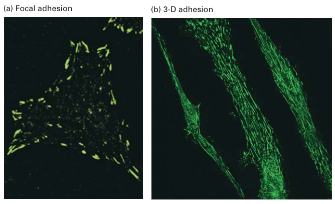
| Focal adhesion | 黏着斑 |
| 3-D adhesion | 三维黏附 |
整合素介导的黏附和信号转导的调控控制细胞运动
细胞可以通过调节整合素的表达水平、配体结合活性或两者，精细地控制整合素介导的细胞-基质相互作用的强度。这种调控对这些相互作用在细胞迁移以及其他涉及细胞运动的功能中所起的作用至关重要。
整合素结合 许多（即使不是全部）整合素至少可以存在两种构象：低亲和力（无活性）形式和高亲和力（活性）形式（图20-38a）。结构研究和研究整合素与配体结合的实验的结果，提供了一个关于整合素被激活时所发生变化的模型。在无活性状态下，αβ异二聚体是弯曲的（图20-38a，上图，以及20-38c），胞外结构域末端配体结合位点的构象只允许低亲和力的配体结合，并且两个亚基的跨膜结构域和胞质C端尾部紧密地结合在一起。在活性状态下，结合位点构象的细微结构改变允许更紧密的（高亲和力）配体结合，并伴随异二聚体跨膜结构域和胞质结构域的分离（图20-38a，下图）。激活还伴随分子伸直成更为伸展的线性形式，其中配体结合位点被投射到离膜表面更远的位置。
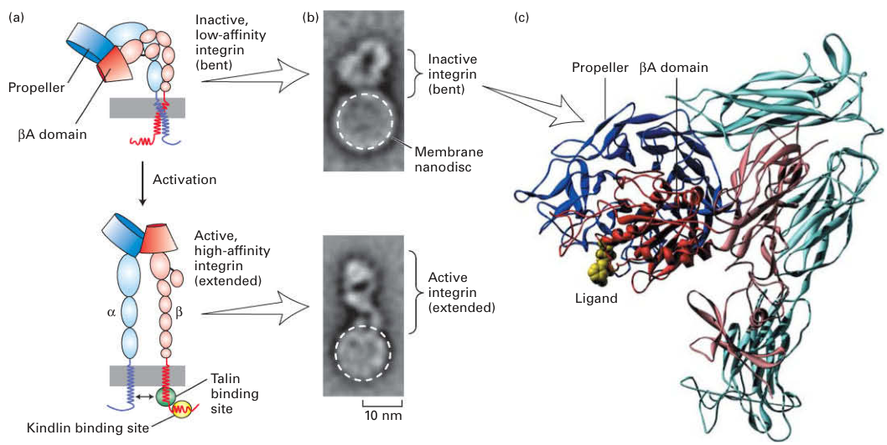
| Ligand | 配体 |
| Propeller domain | 螺旋桨结构域 |
| βA domain | βA结构域 |
| Membrane | 膜 |
| nanodisc | 纳米圆盘 |
| Inactive, low-affinity integrin (bent) | 无活性、低亲和力整合素（弯曲） |
| Active, high-affinity integrin (extended) | 活性、高亲和力整合素（伸展） |
| Activation | 激活 |
| Talin binding site | talin结合位点 |
| Kindlin binding site | kindlin结合位点 |
| RGD peptide ligand | RGD肽配体 |
这些结构模型为整合素介导由外向内和由内向外信号转导的能力提供了一个有吸引力的解释。某些ECM分子或其他细胞上的CAM与整合素胞外配体结合位点的结合，会使整合素保持在胞质尾部彼此分离的活性形式。胞内衔接蛋白可以"感知"尾部的分离，并因此与尾部结合或从尾部解离。这些衔接蛋白的变化随后可以改变细胞骨架，并激活或抑制胞内信号通路。反过来，细胞代谢或信号状态的改变可以使胞内衔接蛋白与整合素的胞质尾部结合或从其上解离，从而迫使尾部要么分离、要么缔合（见图20-38a）。因此，整合素要么弯曲（失活），要么伸直（激活），从而改变其与ECM或其他细胞的相互作用。事实上，将纯化的整合素分别重构到脂双层"纳米圆盘"（nanodisc）中进行的体外研究表明，衔接蛋白/机械感受器蛋白talin（见图20-9b）的球状"头部"结构域与整合素β链胞质尾部的结合，就足以激活整合素，诱导弯曲构象伸直为伸展的活性形式（见图20-38a，下图；以及20-38b，下图）。其他研究提示，完整细胞中整合素的高效激活可能还需要另一类称为kindlin的衔接蛋白参与，它们结合在整合素β链胞质尾部的一个不同位点上（见图20-38a，下图）。Kindlin在整合素和微纤丝介导的TGF-β激活中起关键作用（由内向外信号转导，涉及弹性纤维及其微纤丝缔合蛋白LTBP，前面已描述）以及整合素介导信号转导的其他通路。
血小板功能将在下文更详细地讨论，它很好地说明了细胞-基质相互作用如何通过控制整合素的结合活性而被调节。血小板是在血液中循环的细胞碎片，它们与ECM分子聚集成团而形成血凝块。在其基础状态下，血小板质膜上存在的αIIbβ3整合素不能与其蛋白配体（包括纤维蛋白原和纤连蛋白）紧密结合，这些都是参与血凝块形成的蛋白，因为它处于无活性（弯曲）构象。在血凝块形成过程中，血小板通过与ECM蛋白（如胶原蛋白）以及一种称为von Willebrand因子的大蛋白结合而被激活，后者通过与受体结合产生胞内信号。血小板也可以被ADP或凝血酶激活。这些信号诱导血小板内信号通路的变化，导致血小板αIIbβ3整合素发生激活性的构象改变。因此，这种整合素可以与胞外凝血蛋白紧密结合并参与血凝块的形成。β3整合素亚基有遗传缺陷的人容易过度出血，这证明了αIIbβ3整合素在血凝块形成中的作用（见表20-4）。
整合素表达 细胞与ECM组分的附着也可以通过改变暴露在细胞表面的整合素分子数量来调节。在许多造血细胞上发现的α4β1整合素，为这种调控机制提供了一个例子。这些造血细胞要增殖和分化，就必须附着到由骨髓中支持性（基质）细胞合成的纤连蛋白上。造血细胞上的α4β1整合素与ECM中纤连蛋白里的一个Glu-Ile-Leu-Asp-Val（EILDV）序列结合，从而将细胞锚定到基质上。这种整合素还与一种称为血管CAM-1（VCAM-1）的CAM中的一个序列结合，后者存在于骨髓的基质细胞上。因此，造血细胞既直接接触基质细胞，也直接接触ECM。在分化的晚期，造血细胞减少这种整合素的表达；由此导致的细胞表面α4β1整合素分子数量减少，被认为使成熟血细胞得以从骨髓中的ECM和基质细胞上脱离并进入循环。
ECM与细胞骨架之间的连接在肌营养不良中是有缺陷的
黏附受体介导的ECM组分与细胞骨架之间的联系的重要性，被一组统称为肌营养不良的遗传性肌肉萎缩疾病所凸显。最常见的一型是杜氏肌营养不良（DMD），这是一种性连锁疾病，每3300名男孩中有1人患病，它通常会在十几岁后期或二十岁出头导致心力衰竭或呼吸衰竭。理解这种疾病分子基础的第一条线索来自这样一个发现：DMD患者携带编码一种名为抗肌萎缩蛋白（dystrophin）的蛋白质的基因突变。这种非常大的蛋白被发现是一种胞质衔接蛋白，与肌动蛋白丝以及一种称为肌营养不良蛋白聚糖（dystroglycan）的黏附受体结合（图20-39）。
肌营养不良蛋白聚糖以大型糖蛋白前体的形式合成，在合成后不久、运往细胞表面之前即被蛋白酶解切割成两个亚基。α亚基是一种胞外外周膜蛋白，β亚基是一种跨膜蛋白，其胞外结构域与α亚基缔合（见图20-39）。多个O连接寡糖共价连接到α亚基中丝氨酸和苏氨酸残基的侧链羟基上。其中一些连接不同于最丰富的O连接寡糖（也称黏蛋白样寡糖）中的连接，在后一种连接中，N-乙酰半乳糖胺（GalNAc）是链中直接连接到丝氨酸或苏氨酸侧链羟基上的第一个糖（见图20-30b），或者是蛋白聚糖中的连接（见图20-30a）。相反，肌营养不良蛋白聚糖中20多条O连接链中有一些是通过一个甘露糖直接连接到羟基上的（见图20-30c）。其中一条O-甘露糖连接的链上，有一个磷酸基团连接到甘露糖上。这个磷酸基团随后通过一个未知的连接连接到一种称为matriglycan的、由木糖-葡萄糖醛酸二糖组成的类GAG聚合物上。在高尔基复合体中由一种称为LARGE的酶催化的matriglycan添加到肌营养不良蛋白聚糖上的过程，需要事先添加图20-30c所示的磷酸化O-甘露糖连接的三糖。
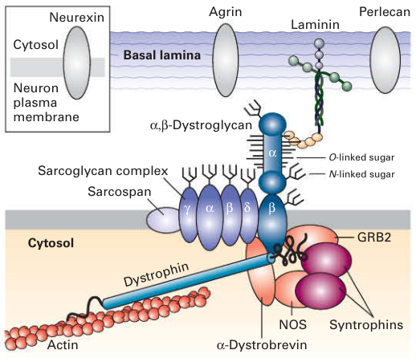
| Agrin | agrin |
| Neurexin | neurexin |
| Plasma membrane | 质膜 |
| Perlecan | perlecan |
| Laminin | 层粘连蛋白 |
| Actin | 肌动蛋白 |
| α-Dystrobrevin | α-肌萎缩蛋白结合蛋白 |
| NOS | 一氧化氮合酶 |
| Syntrophins | 互养蛋白 |
| Dystrophin | 抗肌萎缩蛋白 |
| Sarcospan | sarcospan |
| Sarcoglycan complex | 肌聚糖复合物 |
| α/β-Dystroglycan | α/β-肌营养不良蛋白聚糖 |
| Basal lamina | 基板 |
| O-linked sugar | O连接糖 |
| N-linked sugar | N连接糖 |
O连接的matriglycan与基板的各种组分结合，包括多黏附基质蛋白层粘连蛋白的LG结构域（见图20-24）以及蛋白聚糖perlecan和agrin。神经元表达的一个黏附分子家族——neurexin，也通过O-甘露糖连接的糖被结合。
肌营养不良蛋白聚糖β亚基的跨膜片段与一个整合膜蛋白复合物缔合；其胞质结构域结合抗肌萎缩蛋白和其他衔接蛋白以及多种胞内信号蛋白（见图20-39）。由此形成的大型异源多聚体组装体——抗肌萎缩蛋白糖蛋白复合物（DGC），将ECM与肌动蛋白细胞骨架以及肌肉和其他类型细胞内的信号通路连接起来。例如，在骨骼肌中，信号酶一氧化氮合酶（NOS）通过syntrophin与DGC缔合。肌肉收缩期间胞内Ca2+的升高激活NOS产生一氧化氮（NO），这是一种信号分子，可扩散到附近血管周围的平滑肌细胞中。NO促进平滑肌舒张，导致向骨骼肌供应营养和氧气的血流局部增加。心脏（心肌）收缩可能受到类似的NOS-syntrophin相互作用的影响。
抗肌萎缩蛋白、DGC的其他组分、层粘连蛋白或实现matriglycan添加到肌营养不良蛋白聚糖上的多种酶发生突变，都可能破坏由DGC介导的肌细胞外部与内部之间的联系，并导致肌营养不良。此外，已证明肌营养不良蛋白聚糖突变会大大减少神经肌肉接头处肌细胞上乙酰胆碱受体的聚集，而这一聚集也依赖于基板蛋白层粘连蛋白和agrin。DGC缺陷的这些影响以及可能还有其他影响，显然会导致肌细胞在收缩和舒张过程中机械稳定性的累积性丧失，造成细胞退化和肌营养不良。
肌营养不良蛋白聚糖为细胞生物学中错综复杂的连接网络提供了一个优雅——且具有医学意义——的例子。肌营养不良蛋白聚糖最初是在研究肌营养不良的背景下被发现的。然而，后来证明它在非肌肉细胞中也有表达，并且通过其与层粘连蛋白的结合，在至少某些基膜的装配和稳定性中起关键作用。因此它对正常发育是必需的。进一步的研究使它被鉴定为导致常可致命的人类疾病拉沙热（Lassa fever）的病毒以及其他相关病毒的细胞表面受体，这些病毒都通过matriglycan——肌营养不良蛋白聚糖上介导其与层粘连蛋白结合的寡糖——进行结合。此外，肌营养不良蛋白聚糖是神经系统中特化细胞——施万细胞（Schwann cell）——上的受体，引起麻风病的病原菌麻风分枝杆菌（Mycobacterium leprae）即与之结合。■
IgCAM在神经组织和其他组织中介导细胞-细胞黏附
许多跨膜蛋白的胞外区含有多个免疫球蛋白结构域，它们构成了CAM的免疫球蛋白（Ig）超家族，即IgCAM（例如，见图20-2中的NCAM）。Ig结构域是一个常见的蛋白结构域，含70–110个残基，最初是在抗体——即结合抗原的免疫球蛋白——中发现的（见第23章），但在CAM中有着古老得多的进化起源。人类、黑腹果蝇和秀丽隐杆线虫的基因组分别包含约765、150和64个编码含Ig结构域蛋白的基因。免疫球蛋白结构域存在于各种各样的细胞表面蛋白中，包括淋巴细胞产生的T细胞受体以及许多参与黏附相互作用的蛋白。IgCAM中包括神经CAM；在白细胞进入组织中发挥作用的细胞间CAM（ICAM）；以及存在于紧密连接中的连接黏附分子（JAM）（见图20-18b）。
顾名思义，神经CAM在神经组织中特别重要。其中一种类型——NCAM，主要介导同亲性相互作用。NCAM最初在形态发生期间表达，在肌细胞、胶质细胞和神经元的分化中起重要作用。它们在细胞黏附中的作用已通过用抗NCAM抗体抑制黏附而得到直接证明。由单一基因编码的众多NCAM同工型，是通过mRNA可变剪接以及糖基化的差异产生的。其他神经CAM（如L1-CAM）由不同的基因编码。在人类中，L1-CAM基因不同部分的突变会引起多种神经病理（如智力障碍、先天性脑积水和痉挛）。
一个NCAM由胞外区（含五个Ig结构域和两个纤连蛋白III型结构域）、一个跨膜片段以及与细胞骨架相互作用的胞质片段组成（见图20-2）。相比之下，L1-CAM的胞外区有六个Ig结构域和四个纤连蛋白III型结构域。与钙黏蛋白一样，顺式（胞内）相互作用和反式（胞间）相互作用可能在IgCAM介导的黏附中起关键作用（见图20-3）；不过，IgCAM介导的黏附不依赖Ca2+。
白细胞进入组织由一系列时间精确的黏附相互作用所编排
在成体生物中，几种类型的白细胞（leukocyte）参与防御细菌和病毒引起的感染，并对创伤或炎症造成的组织损伤作出反应。为了对抗感染并清除受损组织，这些细胞必须迅速从血液（在那里它们作为未附着的、相对静息的细胞循环）移动到感染、炎症或损伤部位下方的组织中。我们对四种白细胞进入组织（称为外渗）的过程了解很多：中性粒细胞，释放多种抗菌蛋白；单核细胞，是巨噬细胞的前体，能够吞噬并摧毁外来颗粒；以及T和B淋巴细胞，是免疫系统中识别抗原的细胞（见第23章）。
外渗需要血液中的白细胞与衬在血管壁上的内皮细胞之间细胞-细胞接触的连续形成与断裂。其中一些接触由选择素介导，选择素是一个介导白细胞-血管内皮相互作用的CAM家族。内皮细胞在其面向血液的表面上表达P-选择素和E-选择素，活化的血小板表达P-选择素，白细胞表达L-选择素。所有选择素都含有一个Ca2+依赖性的凝集素结构域，它位于分子胞外区的远端，可识别特定的糖蛋白或糖脂中的糖（见图20-2）。例如，P-选择素和E-选择素的主要配体是一种称为唾液酸化的路易斯-x抗原的寡糖，它是白细胞糖蛋白和糖脂上大量存在的较长寡糖的一部分。
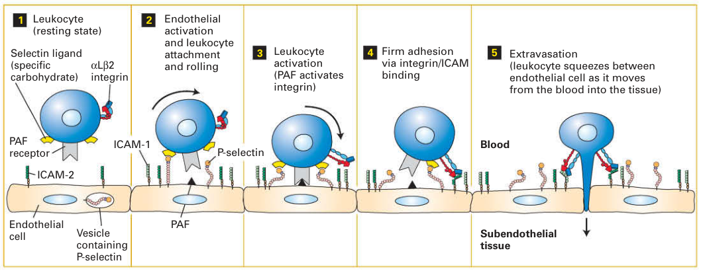
| P-selectin | P-选择素 |
| ICAM-1 | ICAM-1 |
| Endothelial cell | 内皮细胞 |
| Vesicle containing P-selectin | 含P-选择素的囊泡 |
| Extravasation | 外渗 |
| Blood | 血液 |
| Subendothelial tissue | 内皮下组织 |
| PAF receptor | PAF受体 |
| Selectin ligand (specific carbohydrate) | 选择素配体（特异性糖类） |
| Leukocyte (resting state) | 白细胞（静息状态） |
| Endothelial activation and leukocyte attachment and rolling | 内皮激活以及白细胞的附着与滚动 |
| Leukocyte activation | 白细胞激活 |
| αLβ2 integrin | αLβ2整合素 |
| ICAM-2 | ICAM-2 |
| Firm adhesion via integrin/ICAM binding | 通过整合素/ICAM结合的牢固黏附 |
图20-40说明了导致白细胞外渗的细胞-细胞相互作用的基本顺序。感染或炎症区域释放的各种炎症信号首先引起血管内皮的激活。暴露在活化内皮细胞表面的P-选择素介导经过的白细胞的弱黏附。由于血流的力以及P-选择素与其配体结合快速的"开"和"关"速率，这些"被捕获"的白细胞被减慢但不会被停止，实际上在内皮表面上滚动。促进内皮激活的信号中包括趋化因子，这是一组由多种细胞（包括内皮细胞和白细胞）产生的小分子分泌蛋白（8–12 kDa）。
要使活化的内皮细胞与白细胞之间发生紧密黏附，白细胞表面含β2的整合素必须被趋化因子或其他局部激活信号（如血小板活化因子（PAF））间接激活。血小板活化因子的特别之处在于它是一种磷脂而不是蛋白质；它在P-选择素暴露的同时被暴露在活化内皮细胞的表面。PAF或其他激活剂与白细胞上其G蛋白偶联受体的结合导致白细胞整合素的激活（见图20-38）。这些被激活的整合素随后与内皮细胞表面上不同的IgCAM结合。这些IgCAM包括组成型表达的ICAM-2，以及其合成受激活诱导的ICAM-1。ICAM-1通常不会在激活后立即对白细胞与内皮细胞的黏附有实质性贡献，而是在慢性炎症情况下参与较晚期的阶段。由这些不依赖Ca2+的整合素-ICAM相互作用介导的紧密黏附，导致滚动停止以及白细胞在内皮表面的铺展；不久，黏附的细胞便移动到相邻内皮细胞之间并进入下方组织。外渗步骤本身（也称穿越迁移或血细胞渗出；图20-40中的步骤5）需要原本稳定的内皮细胞间黏附相互作用的解离，而这些相互作用主要由CAM VE-钙黏蛋白介导。人们普遍认为，由CAM介导的白细胞与内皮细胞的相互作用会在内皮细胞中启动由外向内信号转导，涉及磷酸化、小GTP酶的激活以及胞质钙浓度的升高。这些信号削弱或破坏VE-钙黏蛋白介导的内皮细胞间黏着连接，并增强肌动蛋白-肌球蛋白收缩，从而将内皮细胞拉开，由此允许白细胞在相邻内皮细胞之间进行旁细胞式的阿米巴样运动，这正是大部分外渗的原因。
因此，白细胞在感染或炎症部位附近与内皮的选择性黏附，取决于相互作用细胞表面上几种不同CAM的依次出现和激活。不同类型的白细胞表达不同的整合素，尽管它们都含有β2亚基。尽管如此，所有白细胞都通过图20-40所描绘的一般机制进入组织。
用于指导白细胞黏附的许多CAM在不同类型的白细胞和靶组织之间是共享的。然而，往往只有特定类型的白细胞被导向特定组织。这种特异性是如何实现的？有人提出了一个三步模型来解释这种白细胞-内皮相互作用的细胞类型特异性。第一，内皮激活促进最初相对较弱、短暂且可逆的结合（例如选择素与其糖类配体的相互作用）。如果没有额外的局部激活信号，白细胞会很快继续前进。第二，感染或炎症部位近旁的细胞释放或表达趋化因子和PAF等化学信号，这些信号只激活瞬时附着的白细胞中的特定亚群，具体取决于这些白细胞所表达的趋化因子受体类型。第三，额外的激活依赖性CAM（如整合素）与其结合伴侣结合，导致强烈的持续黏附。只有当合适的CAM组合、结合伴侣和激活信号在特定位点以适当的时序共同参与时，某个白细胞才会强烈黏附。这种组合式的多样性和交互对话，使得一小组CAM就能在全身发挥多种功能——这是生物学简约性的一个很好的例子。
白细胞黏附缺陷是由整合素β2亚基合成中的遗传缺陷引起的。患有这种疾病的人易患反复的细菌感染，因为他们的白细胞不能正常外渗，因而无法有效地在组织内对抗感染。
一些病原性病毒已经进化出利用参与正常炎症反应的细胞表面蛋白的机制。例如，许多引起普通感冒的RNA病毒（鼻病毒）通过ICAM-1结合并进入细胞，而趋化因子受体可以是导致AIDS的人类免疫缺陷病毒（HIV）的重要进入位点。整合素似乎参与多种病毒的结合和/或内化，包括呼肠孤病毒（引起发热和胃肠炎，尤其是婴儿）、腺病毒（引起结膜炎和急性呼吸道疾病）以及口蹄疫病毒（引起牛和猪发热）。■
- 许多细胞具有含整合素的蛋白簇（如黏着斑、三维黏附、足小体），它们从物理上和功能上将细胞与ECM连接起来，并促进由内向外和由外向内信号转导。
- 通过与整合素的相互作用，细胞周围ECM的三维结构可以深刻地影响细胞的行为。
- 整合素至少存在两种构象（弯曲/无活性、伸直/活性），它们在配体亲和力以及与胞质衔接蛋白的相互作用上有所不同（见图20-38）；在这两种构象之间切换可以调节整合素的活性，这对于控制细胞黏附和运动很重要。
- 黏附受体肌营养不良蛋白聚糖与抗肌萎缩蛋白、其他衔接蛋白和信号分子形成一个大复合物（见图20-39）。该复合物将肌动蛋白细胞骨架与周围的ECM连接起来，为肌肉提供机械稳定性。该复合物各组分的突变会导致不同类型的肌营养不良。
- 神经细胞黏附分子属于CAM的免疫球蛋白（Ig）家族，在神经组织和其他组织中介导不依赖Ca2+的细胞-细胞黏附。
- 几种CAM（如选择素、整合素和ICAM）的组合式、顺序性相互作用，对于不同类型白细胞响应感染或炎症诱导的局部信号而特异性黏附到内皮细胞至关重要（见图20-40）。
20.6 植物组织
我们现在转向植物细胞如何组装成组织。植物的整体结构组织通常比动物简单。例如，植物只有四大类细胞，在成熟植物中它们形成四种基本组织类型：表皮组织与环境相互作用，维管组织运输水和糖、离子等溶解物质，填充空间的基本组织构成代谢的主要场所，而孢子组织形成生殖器官。植物组织仅组织成四个主要器官系统：茎具有支撑和运输功能，根提供固着并吸收和储存养分，叶是光合作用的场所，花包被生殖结构。因此，在细胞、组织和器官层面上，植物通常不如大多数动物复杂。
此外，与动物不同，植物不替换或修复衰老或受损的细胞或组织；它们只是长出新器官。事实上，任一给定植物细胞的发育命运主要取决于它在生物体中的位置，而不是它的谱系，而在动物中两者都很重要（见第21章）。在植物和动物中，细胞与其邻近细胞的直接通讯都很重要。对本章最重要的是，与动物相反，植物中很少有细胞通过整合到其质膜中的分子直接相互接触。相反，植物细胞通常被坚硬的细胞壁包围，细胞壁与相邻细胞的细胞壁相接触（图20-41a）。同样与动物细胞不同，植物细胞很少改变它在生物体中相对于其他细胞的位置。植物及其组织的这些特征，决定了植物细胞被整合进组织并相互通讯的独特分子机制。
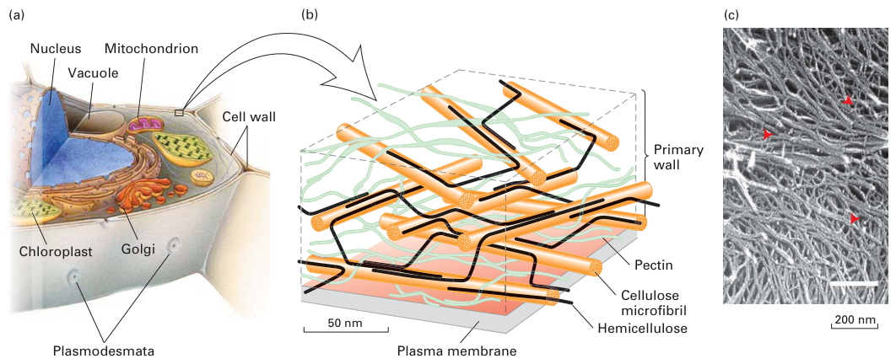
| Primary cell wall | 初生细胞壁 |
| Plasma membrane | 质膜 |
| Cell wall | 细胞壁 |
| Plasmodesmata | 胞间连丝 |
| Chloroplast | 叶绿体 |
| Nucleus | 细胞核 |
| Vacuole | 液泡 |
| Mitochondrion | 线粒体 |
| Golgi | 高尔基体 |
| Pectin | 果胶 |
| Cellulose | 纤维素 |
| microfibril | 微纤丝 |
| Hemicellulose | 半纤维素 |
植物细胞壁是糖蛋白基质中纤维素微纤丝的层叠结构
植物细胞壁是一种主要由多糖组成的细胞外基质，厚约0.2 μm，完全包被在植物细胞质膜的外侧。这一结构承担着一些与动物细胞产生的ECM相同的功能，尽管这两种结构由完全不同的高分子组成，并且组织方式也不同。植物拟南芥（一种小型开花植物，又称"鼠耳芥"；见第1章和第8章）中约1000个基因专门用于其细胞壁的合成与功能，包括大约414个糖基转移酶基因和316个以上的糖苷水解酶基因。与动物ECM类似，植物细胞壁将细胞组织成组织、向植物细胞发出生长和分裂的信号，并控制植物器官的形状。它是一个动态结构，在胚胎发生和生长过程中控制植物细胞分化方面发挥重要作用，并且提供抵御病原体感染的屏障。正如ECM有助于确定动物细胞的形状一样，细胞壁也决定了植物细胞的形状。当细胞壁被水解酶从植物细胞上消化去除后，只剩下被质膜包围的球形细胞。
由于植物细胞壁的一个主要功能是承受细胞的膨压（介于每平方英寸14.5至435磅之间；见第11章），因此细胞壁是为侧向强度而构建的。它排列成纤维素微纤丝层：由30–36条平行的、广泛氢键结合的、长的（可达7 μm或更大）β-糖苷键连接的葡萄糖线性聚合物链组成的束。纤维素微纤丝包埋在由果胶和半纤维素组成的基质中：果胶是d-半乳糖醛酸和其他单糖构成的带负电荷的聚合物，半纤维素则是若干五碳和六碳单糖构成的短的、高度分支的聚合物。细胞壁的机械强度取决于半纤维素链对微纤丝的交联（图20-41b, c）。微纤丝层阻止细胞壁发生侧向拉伸。纤维素微纤丝在质膜的外质面上，由胞质溶胶中形成的UDP-葡萄糖和ADP-葡萄糖合成。这种聚合酶称为纤维素合酶，在纤维素形成时，它沿细胞内微管的轨道在质膜平面内移动，从而为细胞内-细胞外通讯提供了一种独特的机制，并确保纤维素微纤丝正确取向，以使细胞壁乃至整个细胞得以生长。
与纤维素不同，果胶和半纤维素在高尔基体中合成，并被运输到细胞表面，在那里它们形成一个相互连接的网络，有助于将相邻细胞的壁彼此黏合，并对它们起缓冲作用。纯化后的果胶在有Ca2+和硼酸根离子存在时结合水并形成凝胶——因此果胶被用于许多加工食品中。细胞壁中多达15%可能由伸展蛋白组成，这是一种富含羟脯氨酸和丝氨酸的糖蛋白。大多数羟脯氨酸残基与阿拉伯糖（一种五碳单糖）的短链相连，而丝氨酸残基与半乳糖相连。碳水化合物约占伸展蛋白重量的65%，其蛋白骨架形成一个伸展的杆状螺旋，带有羟基或O-连接的碳水化合物向外突出。木质素——一种由酚类残基组成的复杂不溶性聚合物——与纤维素结合，是一种增强材料。如同软骨蛋白聚糖一样，木质素能抵抗压缩力。
细胞壁是一种选择性滤器，其通透性主要受果胶控制。水和离子可以自由地跨细胞壁扩散，而大分子（包括大于20 kDa的蛋白质）的扩散则受到限制。这种限制或许可以解释为什么许多植物激素都是小的水溶性分子，它们能够跨细胞壁扩散并与植物细胞质膜中的受体相互作用。
细胞壁的松弛使植物细胞得以生长
由于包围植物细胞的细胞壁阻止其扩张，因此当细胞生长时，必须使细胞壁的结构松弛。植物细胞生长的量、类型和方向由称为生长素的小分子激素调控。生长素诱导的细胞壁弱化，使细胞内液泡（见图20-41a）能通过吸水而扩张，从而导致细胞伸长。我们可以通过如下设想来理解这一现象的幅度：如果把红杉树中的所有细胞都缩小到典型肝细胞的大小，这棵树的最大高度将只有1米，约为正常情况的百分之一。
胞间连丝直接连接相邻细胞的胞质溶胶
植物中分隔细胞的细胞壁的存在，给细胞-细胞通讯——因而也给细胞分化——带来了动物所没有遇到的障碍。植物细胞用于直接通讯的一种独特机制是称为胞间连丝的专门细胞连接，它们穿过细胞壁延伸（图20-42）。像缝隙连接一样，胞间连丝是连接一个细胞的胞质溶胶与相邻细胞胞质溶胶的通道。通道的直径约为30–60 nm，其长度可变，但可能大于1 μm。胞间连丝的密度因植物和细胞类型而异，即使是最小的分生组织细胞，与其邻居之间也有上千个连接。人们认为一种称为NET1A的衔接蛋白将胞间连丝与肌动蛋白细胞骨架连接起来。尽管已经鉴定出多种在物理上或功能上与胞间连丝相关的蛋白质和多糖，但胞间连丝的关键结构蛋白组分，以及其生物发生所依据的详细机制，仍有待确定。
小于约1000 Da的分子，包括各种代谢和信号化合物（离子、糖、氨基酸），通常可以扩散通过胞间连丝。然而，分子所通过的通道的大小受到高度调控。在某些情况下，通道被夹紧关闭；在另一些情况下，它扩张到足以允许大于10,000 Da的分子通过。在通道入口附近的细胞外空间中，一种称为胼胝质的葡萄糖聚合物的沉积与分解（见图20-42a），被认为分别调控着通道的关闭与开启。影响胞间连丝通透性的因素之一是胞质溶胶中的Ca2+浓度：胞质溶胶中Ca2+的升高可逆地抑制分子通过这些结构的运动。
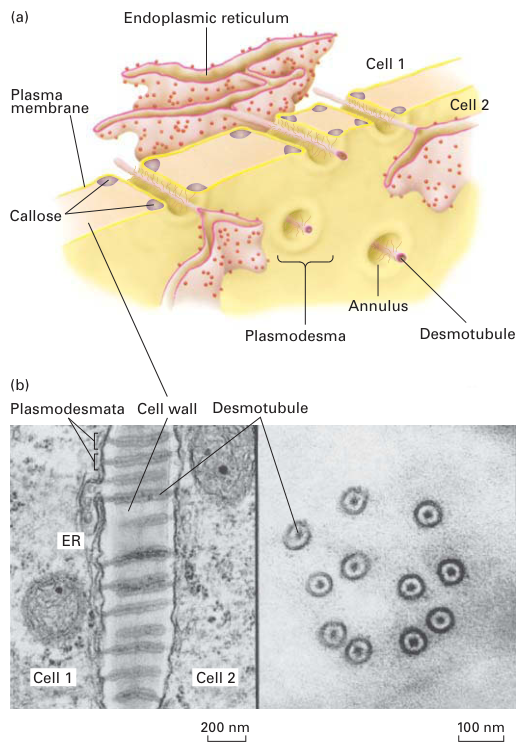
| Plasmodesma | 胞间连丝 |
| Plasmodesmata | 胞间连丝 |
| Desmotubule | 桥管 |
| Annulus | 环带 |
| Callose | 胼胝质 |
| Plasma membrane | 质膜 |
| Cell wall | 细胞壁 |
| Endoplasmic reticulum | 内质网 |
| ER | 内质网（ER） |
| Cell 1 | 细胞1 |
| Cell 2 | 细胞2 |
尽管胞间连丝与缝隙连接在形成小分子扩散通道这一点上功能相似，但它们的结构在两个重要方面有显著不同（见图20-42）。在胞间连丝中，相邻植物细胞的质膜融合形成一个称为环带的连续通道，而在缝隙连接处，动物细胞的质膜彼此并不连续。有简单胞间连丝（具有单个孔，如图20-42所示），也有分支成多个通道的复杂胞间连丝。此外，胞间连丝还表现出许多其他的复杂结构和功能特征。例如，它们在通道内含有内质网的延伸部分，称为桥管，它穿过环带。它们在通道入口处以及贯穿通道全长还含有多种特化蛋白，包括调控能通过通道的分子的尺寸和类型的细胞骨架蛋白、马达蛋白和锚定蛋白。许多类型的分子通过胞间连丝在细胞间扩散，包括某些转录因子、核酸/蛋白质复合物、代谢产物和植物病毒。看来其中一些需要特殊的伴侣蛋白来促进运输。特化的激酶也可能磷酸化胞间连丝组分以调控其活性（例如通道的开启）。可溶性分子通过位于质膜与桥管之间、直径约3–4 nm的胞质环带，而膜结合分子或ER腔内的某些蛋白质则可经由桥管在细胞间通过。胞间连丝似乎在抵御病原体以及调控植物细胞和组织的发育中发挥特别重要的作用，这一点由它们能介导转录因子和核糖核蛋白复合物的细胞内运动所提示。
隧道纳米管类似胞间连丝，并在动物细胞间转移分子和细胞器
隧道纳米管是质膜的管状突起，形成连接动物细胞胞质溶胶的连续通道（图20-43），并能以类似于植物胞间连丝的方式在细胞间传递化学和电信号。隧道纳米管通常是无分支的直管，其直径（50–300 nm）和长度变化范围很大（在细胞间延伸，从<10 μm到>100 μm，因此可以长于几个细胞的直径）。所有隧道纳米管都有肌动蛋白丝穿过中央通道，在某些类型的细胞中它们还含有微管。没有证据表明有内质网像在胞间连丝中那样穿过隧道纳米管。值得注意的是，在细胞培养（见图20-43）和体内，功能性线粒体可以通过隧道纳米管在细胞间旅行，从而挽救有线粒体缺陷或不足的受体细胞。因此，20.2节中描述的代谢偶联概念可以扩展为也包括小分子和细胞器通过隧道纳米管的运动。病原体也可能利用隧道纳米管在细胞间传播。
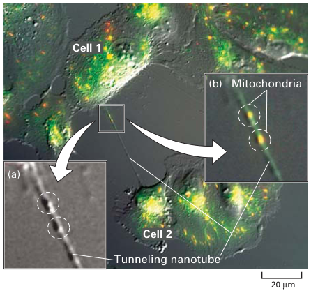
| Tunneling nanotube | 隧道纳米管 |
| Mitochondria | 线粒体 |
| Cell 1 | 细胞1 |
| Cell 2 | 细胞2 |
在植物中只鉴定出少数黏附分子
对拟南芥基因组的系统分析，以及对其他植物物种的生化分析，都没有提供证据表明大多数动物CAM、黏附受体和ECM组分在植物中存在同源物。鉴于动物和植物中细胞-细胞和细胞-ECM相互作用的性质截然不同，这一发现并不令人意外。
显然为植物所独有的黏附蛋白中，包括五种壁关联激酶（WAK）以及表达于拟南芥细胞质膜中的WAK样蛋白。这些跨膜蛋白具有一个胞质丝氨酸/苏氨酸激酶结构域，其胞外区含有多个表皮生长因子（EGF）重复序列，后者在动物细胞表面受体中很常见。一些WAK具有一个胞外果胶结合结构域，能够识别并结合全长果胶和果胶降解片段。有人提出，这种结合有助于细胞在正常生长过程中以及在细胞壁损伤（创伤）或病原体感染的背景下，监测并响应细胞壁的状态。因此，植物细胞中的某些WAK似乎类似于动物细胞中的黏附受体，结合并感知ECM，并介导由外向内信号转导。
体外结合实验的结果，结合体内研究和植物突变体分析，已经鉴定出ECM中若干对黏附很重要的大分子。例如，含有精细胞的花粉正常黏附到复活节百合雌性生殖器官的柱头或花柱上，需要一种称为柱头/花柱富含半胱氨酸黏附素（SCA）的富含半胱氨酸的蛋白，以及一种能与SCA结合的特化果胶（图20-44）。一种小的、可能包埋于ECM中的10 kDa蛋白，称为chymocyanin，与SCA协同作用，帮助引导含精子的花粉管向子房运动（趋化性）。
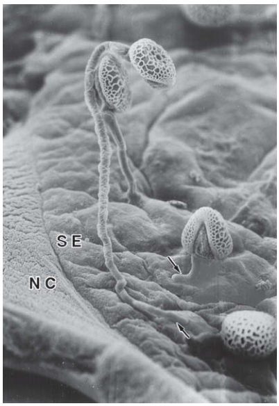
破坏编码葡萄糖醛酸基转移酶1（果胶生物合成中的一种关键酶）的基因，为果胶在植物分生组织的细胞间黏附中的重要性提供了一个引人注目的例证。正常情况下，特化的果胶分子有助于把分生组织中的细胞紧密地保持在一起。当作为一群相对未分化的细胞（称为愈伤组织）在培养中生长时，正常的分生组织细胞紧密黏附，并能分化成产生叶绿素的细胞，使愈伤组织呈绿色。最终愈伤组织会长出芽。相反，葡萄糖醛酸基转移酶1基因失活的突变细胞体积大，彼此松散地结合，不能正常分化，形成黄色的愈伤组织。将正常的葡萄糖醛酸基转移酶1基因导入突变细胞，可恢复它们正常黏附和分化的能力。
迄今为止鉴定出的植物黏附分子很少，与动物中众多已明确定义的黏附分子形成对比，这可能归因于研究植物ECM/细胞壁的技术困难。黏附相互作用在植物和动物生物学中很可能扮演不同的角色，至少部分是因为植物和动物在发育和生理上的差异。
- 植物中细胞整合成组织的过程与动物组织的组装有根本不同，主要因为每个植物细胞都被相对坚硬的细胞壁包围。
- 植物细胞壁由包埋在由半纤维素、果胶、伸展蛋白和其他含量较少的分子构成的基质中的纤维素微纤丝层组成。
- 纤维素是一种大型线性葡萄糖聚合物，能自发组装成由氢键稳定的微纤丝。
- 细胞壁决定植物细胞的形状并限制其伸长。生长素诱导的细胞壁松弛使细胞得以伸长。
- 相邻植物细胞可通过胞间连丝通讯，这种连接允许分子穿过连接相邻细胞胞质溶胶的复杂通道（见图20-42）。
- 动物细胞中的隧道纳米管与植物胞间连丝有些类似，因为它们都是质膜的管状突起，形成连接邻近细胞胞质溶胶的连续通道（见图20-43）。
- 植物不产生动物中常见黏附分子的同源物。迄今为止，植物中只有少数黏附分子得到了充分记载。
访问LaunchPad可获取学习工具并进一步了解本章内容：展望未来、分析数据、扩展参考文献，以及包括视频、动画和测验在内的附加学习工具。
关键术语
复习题
- 1.请描述赋予钙黏蛋白等黏附分子多样性的两种现象。还有什么现象赋予整合素多样性？
- 2.已知钙黏蛋白介导细胞之间的同亲性相互作用。什么是同亲性相互作用？如何用实验证明E-钙黏蛋白存在这种相互作用？钙黏蛋白介导的同亲性相互作用需要细胞外环境中的哪种成分？这一需求又如何加以证明？
- 3.除了连接相邻上皮细胞侧面膜的作用之外，黏着连接还在控制细胞形状中发挥作用。参与这一作用的胞内相关结构和蛋白有哪些？
- 4.紧密连接的正常功能是什么？当紧密连接功能失常时，组织会发生什么？
- 5.心肌细胞之间的缝隙连接与子宫平滑肌细胞之间的缝隙连接形成连接，从而实现快速通讯。这一现象称为什么？为分娩（childbirth）做准备时，子宫平滑肌细胞之间的通讯是如何上调的？
- 6.什么是胶原蛋白？它是如何合成的？我们如何知道胶原蛋白是组织完整性所必需的？
- 7.请解释整合素结构的变化如何介导由外向内信号转导和由内向外信号转导。
- 8.请比较所有组织的ECM中都含量丰富的三类大分子各自的功能与性质。
- 9.许多蛋白聚糖具有信号传导作用。脑下丘脑区的syndecan对摄食行为的调节就是一个例子。这种调节是如何实现的？
- 10.你合成了一种寡肽，其中含有被其他氨基酸包围的RGD基序。当把这种肽加到培养于吸附在组织培养皿上的纤连蛋白层之上的成纤维细胞培养物中时，会产生什么效应？为什么会发生这种情况？
- 11.请描述在生理或病理组织重塑中重塑或降解ECM的三大类蛋白的主要活性及可能的定位。举出一种这些蛋白发挥关键作用的病理状态。
- 12.血液凝固是哺乳动物生存的关键功能。纤连蛋白的多黏附特性如何导致血小板被招募到血凝块中？
- 13.细胞外基质（ECM）与细胞骨架之间分子连接的变化如何导致杜氏肌营养不良症？
- 14.为对抗感染，白细胞会迅速从血液移入组织中的感染部位。这一过程称为什么？黏附分子如何参与这一过程？
- 15.植物细胞壁的结构需要松开以适应细胞生长。哪种信号分子控制这一过程？
- 16.请比较植物细胞的胞间连丝与动物细胞的缝隙连接和隧道纳米管。
参考文献
细胞-细胞与细胞-细胞外基质黏附：概述
Humphrey, J. D., E. R. Dufresne, and M. A. Schwartz. 2014. Mechanotransduction and extracellular matrix homeostasis. Nat. Rev. Mol. Cell Biol. 15:802–812.
Jansen, K. A., et al. 2015. A guide to mechanobiology: where biology and physics meet. Biochim. Biophys. Acta1853: 3043–3052.
The Matrisome Project website (http://matrisomeproject.mit. edu). A compilation of datasets and information about the genes and proteins of the matrisome.
Naba, A., et al. The extracellular matrix: tools and in- sights for the "omics" era. Matrix Biol. 2015 Jul 8. pii: S0945- 053X(15)00121-3. [Epub ahead of print]
Nieto, M. A. 2013. Epithelial plasticity: a common theme in embryonic and cancer cells. Science342:1234850.
Padmanabhan, A., et al. 2015. Jack of all trades: functional mod- ularity in the adherens junction. Curr. Opin. Cell Biol.36:32–40.
细胞-细胞与细胞-细胞外基质连接及其黏附分子
Anderson, J. M., and C. M. Van Itallie. 2009. Physiology and function of the tight junction. Cold Spring Harb. Perspect. Biol. 1(2):a002584.
Conrad, M. P., et al. 2016. Molecular basis of claudin-17 anion selectivity. Cell. Mol. Life Sci. 73:185–200.
Gershon, E., V. Plaks, and N. Dekel. 2008. Gap junctions in the ovary: expression, localization and function. Mol. Cell. Endocrinol. 282:18–25.
Glentis, A., V. Gurchenkov, and D. Matic Vignjevic. 2014. As- sembly, heterogeneity, and breaching of the basement membranes. Cell Adh. Migr.8(3):236–245.
Lee, J. M., et al. 2006. The epithelial-mesenchymal transition: new insights in signaling, development, and disease. J. Cell Biol. 172(7):973–981.
McMillen, P., and S. A. Holley. 2015. Integration of cell-cell and cell-ECM adhesion in vertebrate morphogenesis. Curr. Opin. Cell Biol.36:48–53.
Oda, H., and M. Takeichi. 2011. Structural and func- tional diversity of cadherin at the adherens junction. J. Cell Biol. 193(7):1137–1146.
Walko, G., M. J. Castañón, and G. Wiche. 2015. Molecular architecture and function of the hemidesmosome. Cell Tissue Res. 360:529–544.
Wu, Y., P. Kanchanawong, and R. Zaidel-Bar. 2015. Actin-delimited adhesion-independent clustering of E-cadherin forms the nanoscale building blocks of adherens junctions. Dev. Cell32:139–154.
Yang, C. C., et al. 2015. Differential regulation of the Hippo pathway by adherens junctions and apical-basal cell polarity mod- ules. Proc. Natl. Acad. Sci. USA112:1785–1790.
Zaidel-Bar, R., and B. Geiger. 2010. The switchable integrin adhesome. J. Cell Sci.123(pt. 9):1385–1388.
细胞外基质I：基板
Bonnans, C., J. Chou, and Z. Werb. 2014. Remodelling the extracellular matrix in development and disease. Nat. Rev. Mol. Cell Biol.15:786–801.
Hohenester, E., and P. D. Yurchenco. 2013. Laminins in base- ment membrane assembly. Cell Adh. Migr.7:56–63.
Hynes, R. O. 2014. Stretching the boundaries of extracellular matrix research. Nat. Rev. Mol. Cell Biol.15:761–763.
Robertson, W. E., et al. 2014. Supramolecular organization of the α121-α565 collagen IV network. J. Biol. Chem.289:25601– 25610.
Sarrazin, S., W. C. Lamanna, and J. D. Esko. 2011. Heparan sulfate proteoglycans. Cold Spring Harb. Perspect. Biol.3. pii: a004952.
细胞外基质II：结缔组织
Canty, E. G., and K. E. Kadler. 2005. Procollagen trafficking, processing and fibrillogenesis. J. Cell Sci.118:1341–1353.
Robertson, I. B., et al. 2015. Latent TGF-β-binding proteins. Matrix Biol.47:44–53.
Shaw, L. M., and B. R. Olsen. 1991. FACIT collagens: diverse molecular bridges in extracellular matrices. Trends Biochem. Sci. 16(5):191–194.
Shoulders, M. D., and R. T. Raines. 2011. Interstrand dipole- dipole interactions can stabilize the collagen triple helix. J. Biol. Chem.286:22905–22912.
Yoshida-Moriguchi, T., and K. P. Campbell. 2015. Matrigly- can: a novel polysaccharide that links dystroglycan to the basement membrane. Glycobiology25:702–713.
运动细胞与非运动细胞中的黏附相互作用
Carraher, C. L., and J. E. Schwarzbauer. 2013. Regulation of matrix assembly through rigidity-dependent fibronectin conforma- tional changes. J. Biol. Chem.288:14805–14814.
Collins, C., and W. J. Nelson. 2015. Running with neighbors: coordinating cell migration and cell-cell adhesion. Curr. Opin. Cell. Biol.36:62–70.
Früh, S. M., et al. 2015. Molecular architecture of native fibro- nectin fibrils. Nat. Commun.6:7275.
Griffith, L. G., and M. A. Swartz. 2006. Capturing complex 3D tissue physiology in vitro. Nat. Rev. Mol. Cell Biol. 7(3):211–224.
Iwamoto, D. V., and D. A. Calderwood. 2015. Regulation of integrin-mediated adhesions. Curr. Opin. Cell Biol. 36:41–47.
Nourshargh, S., and R. Alon. 2014. Leukocyte migration into inflamed tissues. Immunity41:694–707.
Springer, T. A., and M. L. Dustin. 2012. Integrin inside-out signaling and the immunological synapse. Curr. Opin. Cell Biol. 24:107–115.
Xiong, J. P., et al. 2001. Crystal structure of the extracellular segment of integrin αVβ3. Science294:339–345.
植物组织
Austefjord, M. W., H. H. Gerdes, and X. Wang. 2014. Tunnel- ing nanotubes: diversity in morphology and structure. Commun. Integr. Biol.7:e27934.
Chae, K., and E. M. Lord. 2011. Pollen tube growth and guid- ance: roles of small, secreted proteins. Ann. Bot.108:627–636.
Sevilem, I., S. R. Yadav, and Y. Helariutta. 2015. Plasmodes- mata: channels for intercellular signaling during plant growth and development. Methods Mol. Biol.1217:3–24.
Tan, A. S., et al. 2015. Mitochondrial genome acquisition re- stores respiratory function and tumorigenic potential of cancer cells without mitochondrial DNA. Cell Metab.21:81–94.